入口
なぜ、次の文字を予測するだけの技術が、翻訳・要約・プログラミング・推論・ツール操作まで行えるようになったのか。チャット欄は「会話」に見えるが、裏側は条件付き次トークンの連鎖である。その連鎖が、どの問題を解きながら今の形になったのか——製品の宣伝文句でも、用語のカタログでも、画面の流暢さだけでは見えない。
ここで失うのは、製品を盲信するか一括否定するかの二択である。技術を段階的に理解し、最新の争点まで辿り着き、世の中の主張を自分で評価できる主体性が、賭け金になっている。入口で結論を固定せず、問題の連鎖を先に通す。解釈は最後に、読者自身が選び直せる形で残す。
読み方を二つだけ先に固定する。(1) 機構の定義・論文の観測は事実、能力・必然性・優位性の主張は議論——混ぜない。(2) 技術史の各駅のあとで、「いまどこに残っているか」を一度示す——消えた技術と、用途を変えて生き残った技術を分け、現代の製品名へ橋を架ける。
言語の続きを予測する技術は、どの問題を解決しながら現在の形になり、その過程で何を獲得し、何を未解決のまま残しているのか。
この問いに答えるために、次の六つの問題を順に解いていく。前半は骨格が替わる技術史、後半は層の地図と論争である。機構名のカタログではない。
- 記号列に確率を与え、次の記号を予測する、とは何を最適化しているのか。 直接目的と獲得能力と保証を分ける。
- 数え上げから RNN、Attention、Transformer へ——何がボトルネックになり、何が消えたのか。 骨格交代の連鎖を辿り、各駅の「いまどこに残るか」も示す。
- 大規模事前学習と後学習は、何を変え、何を変えなかったのか。 ここまでが第1部の到達点である。
- いまの LLM は何層でできているのか。 技術史の木（時間）とシステム構成の木（組み立て）を分け、MoE や Agent を同じ種類の枝に置かない。
- 各層の最新技術は、何を改善し、何を変えていないのか。 構造・高速化・推論方法・外部システム・置換枝を、動機ラベル付きで見る。
- いま何が論争で、自分はどの立場を採るか。 事実と意見を分け、利用の線を自分で引く。
第1部 技術史——問題が骨格を替えた
ここから先は、言語モデルの骨格そのものが交代した道だけを辿る。数え上げがニューラル表現へ、再帰が Attention へ、Encoder–Decoder が Decoder-only の大規模事前学習へ——各段階で「前の解法がどこで潰れたか」が次の部品を強制する。部品の高速化や MoE のような層内改善は、まだ登場させない。
言語モデルとは何か
チャット欄に返ってくる流暢な日本語、コードの続き、要約らしい段落——体験は「賢い相手」との対話に見える。ところが、裏側の学習装置が直接最適化している対象は、もっと地味だ。記号列の各位置で、左側にすでにある列のあとに、次の記号が来る確率を当てる。翻訳用の損失、要約用の損失、真偽判定用の損失を最初から並べるのではなく、テキスト自身が教師になる。ここから先の技術史——埋め込み、再帰、注意、巨大事前学習——はすべて、この問いの上に積み重ねられた部品である。入口で固定すべきは、装置が何を「当てている」のか、そして何が獲得能力で何が保証外なのか、という境界だ。
条件付き次トークン予測 P(x_t | x_<t)
条件付き次トークン予測とは、時刻 \(t\) において、それより左にあるすべての記号 \(x_1, \ldots, x_{t-1}\) が与えられたとき、次の記号 \(x_t\) が語彙のどの要素になるかを確率分布として出力する問題設定である。記号 \(w\) について \(P(x_t = w \mid x_1, \ldots, x_{t-1})\) を計算し、語彙全体に確率質量を配る。質問文か命令文か、引用か脚色か——損失関数は体裁を区別しない。与えられた接頭辞の ID 列が、次スロットのスコアベクトルに影響する、という約束だけが入っている。
出力は長さ \(|V|\) のベクトルだ。各成分は非負で、和は 1 に正規化される（実装では生の logits を出し、softmax で確率へ変換する）。インデックス \(j\) の値は「語彙 ID \(j\) が直後に来る確率」として読む。ここで誤りやすいのは、高い確率を「正しい回答」や「理解の証明」と混同することだ。確率が大きいのは、訓練コーパスで似た接頭辞のあとにそのトークンがしばしば観測された、という統計的事実の表れにすぎない。
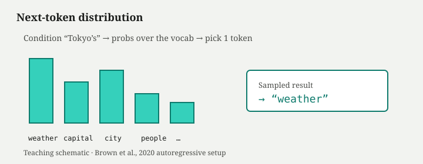
シミュレーションを開く — 各ステップは語彙上の分布を出し、そこから1トークンを選ぶ
訓練では、文書が実際に持っている次のトークン ID を正解とみなし、交差エントロピーで正解への確率質量を増やす。全位置・全文書で平均し、勾配降下が重みを更新する——これが尤度最大化の実務的な姿だ。Shannon は印刷英語の予測可能性を情報理論の枠で測り、言語は次の記号についてかなりの予測圧縮が可能だと示した（*1）。現代の言語モデルは、その「次を当てる」圧力をニューラルネットで大規模に実装した延長線上にある。
直接目的と獲得能力の分離
直接目的は常に次トークンの対数尤度である。一方、翻訳・要約・コード補完・対話らしい応答といった振る舞いは、損失に明示的なラベルとして入っていない。それでも現れるのは、多くのスキルが「与えられた前文の statistically likely な続き」に圧縮可能だからだ、という経験的主張がある。Brown らの GPT-3 は、大規模な自己教師あり事前学習のあと、多様なプロンプトに対する few-shot 挙動を報告した（*2）。根底にあるのは依然として次トークンの当てゲームだ。接頭辞に例を並べると分布が曲がる——文脈内学習（in-context learning） と呼ばれる現象——があっても、推論時に重みは動かず、学習目標の形は変わらない。
この分離を崩すと説明が破綻する。「翻訳を理解して学習した」のではなく、「この記号列のあとにはしばしばあの記号列が来た」という統計を、接頭辞の形で再利用できる、と読む方が層の言葉に忠実だ。獲得能力は、直接目的の副産物として起こりうるが、損失がその能力を個別に保証するわけではない。
保証されない性質
高確率のトークン列は、整った文体・よくある言い回し・権威的なトーンを帯びやすい。コーパスに論文らしい接頭辞のあとに fictitious な書誌が続く例があれば、そのパターンも学習される。だから幻覚（尤もらしい偽）の土台の一つは、次トークン目標が「もっともらしい続き」を奖励することにある——意図的な欺瞞ではなく、統計的尤もらしさの産物として現れる。
Bender らは、大規模言語モデルの流暢さが、言語理解や世界モデルの存在を意味すると短絡することへの規範的警告を述べた（*3）。これはメカニズムの証明ではなく、解釈の注意喚起である。技術的事実として言えるのは、単体では保証されないものが多い、という線の引き方だ。事実の正しさ、意図への忠実さ、有害出力の拒否、引用の真正性——これらの多くは、のちの後学習層やアプリケーション層（検索・ツール・検証）の話であり、次トークン尤度だけでは構造的に閉じない。
学習時と推論時の条件の与え方も保証外の振る舞いを生む。学習では正解列（teacher forcing）を同時に見られるが、推論では自分がサンプルしたトークンが次の条件になる。一度外れた記号は、その先ずっと条件を汚し続ける。チャットで最初の一文が微妙にズレると後半全体が別方向に流れるのは、この自己条件づけの性質と無関係ではない。
内部：一歩先だけを教師にする
各位置の損失は、直後の一記号だけを正解とする。三トークン文 [東京, の, 天気] では、位置 1 で「の」、位置 2 で「天気」を当てる——独立した分類の連鎖だが、条件は左に伸びる接頭辞だ。遠い主語と述語が統計的につながって見えるのは、接頭辞全体が次の分布を決める条件になるからであり、損失が明示的に「主語–述語ペア」を結びつけているわけではない。
推論時は、分布から一つの ID を選んで接頭辞に付け足し、また次の分布を出す——因果自己回帰の骨格だ。学習目標は常に一歩先の記号だが、生成はその当てゲームを自分の出力で巻き戻しながら進む。ここまでの層で固定できるのは学習目標の形までだ。中核は、これまでの列のあとに来る次トークンを、語彙全体への分布として当てることである。
改善と未解決
この設定の強みは、タスクごとの教師ラベルなしに、雑多なドメインのテキストから振る舞いを押し出せることだ。同じアーキテクチャと同じ損失で、コード・ニュース・対話ログを同時に学習できる。モジュールをタスクごとに差し替えない設計が可能になるのは、入力のフォーマット（接頭辞の並び）が変われば条件付き分布が変わる、という単純な仕組みの上にある。
一方、コーパスの偏りはそのまま振る舞いの偏りになる。事前学習は中立な「一般知識の抽出」ではなく、観測された続きの再配分だ。高確率は「よく見る続き」であって「正しい事実」の証明ではない。
次に立つ問題
直接目的は次トークンの尤度だが、分布を形作るには「接頭辞をどう表現するか」が要る。古典的には離散記号の数え上げから始まった。語彙と履歴長が少し増えるだけで組み合わせが爆発し、未知の並びには確率が載らない——次章では、その壁と、ベクトル共有による緩和を見る。
言語を「次の記号を当てるゲーム」に還元する発想は、予測競争のルールブックに近い。賢さの証明ではなく、統計的続きの再生産——その上に、のちの章で積み上がる技術が載る。
論争カード
論点: 次トークン予測は理解を生むのか。
| 立場 | 主張 | 根拠の型 |
|---|---|---|
| 強い実用主義 | 大規模化で多様タスクが現れるので、実質的理解がある | 経験（GPT-3 等の挙動） |
| 懐疑・規範 | 流暢さ≠理解；統計的模倣の警告 | Bender ら（*3）；哲学的議論 |
| 中間 | 内部表現に構造はあるが、保証は別設計 | ベンチマーク・層分離 |
層での置き方: 直接最適化は尤度。理解の有無は獲得能力の解釈論であり、事実保証の話ではない。
数え上げからニューラル表現へ
前章の出口で、言語モデルの直接目的は次トークンの尤度だと固定した。では、その分布をどう形作るか。最も素朴な答えは、過去に観測した続きを数え上げることだ。「この \(n-1\) 個の記号のあとに、次は何が来たか」を表にして、割合を確率とみなす。実装は単純で解釈も明瞭だ。ところが語彙と履歴が現実の言語に近づくほど、表は空になり、未知の並びには確率が載らない。組み合わせ爆発とデータ疎性が、数え上げだけの言語モデルをどこで潰すか——ここからニューラル表現への転換が始まる。
n-gram と疎性
n-gram 言語モデルは、直前 \(n-1\) 個のトークン（文脈）をキーに、次トークンの出現回数を数え、正規化して \(P(x_t \mid x_{t-n+1}, \ldots, x_{t-1})\) を推定する。マルコフ近似として、遠い過去は捨て、固定長の履歴だけを見る。スペルチェック、音声認識の言語モデル、検索のクエリ補完など、低遅延・解釈容易な領域では長く現役だった。
問題は組み合わせの爆発だ。語彙 \(|V|\)、履歴長 \(n\) なら、理論上の文脈パターンは \(|V|^{n-1}\) 通りになる。実コーパスはそのごく一部しか観測しない——大多数の n-gram は一度も出現せず、確率はゼロか平滑化の人為的な値に頼る。疎性とは、この「空きマス」の多さを指す。さらに、訓練時に見たことのない語順は、表からは確率を読み出せない。未知語・未知の複合語に対して、数え上げは構造的に弱い。
たとえば三語履歴（トリグラム）で語彙が五万なら、理論上の文脈は \(5 \times 10^4\) の二乗オーダー——実データで埋まるのは氷山の一角だ。平滑化（加算平滑、バックオフ、Kneser–Ney など）は実務的な救済策だが、根本は「各文脈を独立した箱として数える」設計にある。似た意味の文脈同士が表上で共有されない。
ニューラル言語モデル
ニューラル言語モデル（Neural LM）は、離散の文脈 ID を、連続ベクトルへ写してから非線形変換で次トークン分布を出す。Bengio らの Neural Probabilistic Language Model は、高次元の one-hot 文脈をそのまま数え上げる代わりに、分散表現で語と文脈を低次元ベクトルに埋め、類似した文脈が近い領域に配置されるよう学習する（*1）。表の行数は語彙サイズだが、各行は固定長の実ベクトルであり、文脈全体の表現はそれらの関数になる。
学習目標は前章と同じ——各位置の交差エントロピーだ。変わるのは、確率を出すまでの経路だけである。one-hot の巨大行列を直接推定するのではなく、埋め込み層と隠れ層が「文脈→次トークン」の写像を滑らかに近似する。訓練データに一度しか出ない n-gram でも、近いベクトル配置を通じて、似た文脈からの一般化が起こりうる。
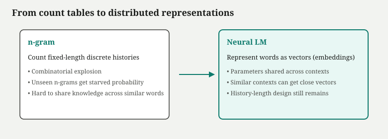
埋め込み（分散表現）
埋め込み（embedding）とは、離散トークン ID を固定次元の実ベクトル \(e_w \in \mathbb{R}^d\) に対応づける表である。学習とともに、共起や続きの統計に応じてベクトルが動き、意味や用法が近い語は空間上で近づきやすい。数え上げ表では「犬が走った」と「犬が走る」は別行だが、埋め込み空間では主語・述語のベクトルが共有され、見たことのない活用形にもある程度対応できる——これが一般化の核だ。
初期の Neural LM では、文脈は固定長の直前トークンの埋め込みを連結または畳み込んだものに限られた。すなわち、固定長履歴の制約は残る。遠い過去は切り捨てられ、n-gram と同様に「どこまで左を見るか」は設計者が決める窓の長さに縛られる。表現は滑らかになったが、可変長の長い依存をそのまま運ぶ仕組みではない。
内部：確率はどこで出るか
パイプラインを固定する。トークン列 → 埋め込み行列 \(E\) でベクトル列 → 文脈ベクトル \(h\)（当時は連結＋MLP や単純な再帰の前段）→ 語彙サイズの logits → softmax で \(P(x_t \mid \text{context})\)。損失は正解トークンへの \(-\log p\)。勾配は埋め込み表と変換の重みの両方に流れる。だから「犬」と「猫」が似た文脈で交換可能な続きを学ぶと、両者のベクトルが引き寄せられる——数え上げでは別カウントだったパターンが、パラメータ空間で共有される。
改善と未解決
改善点は明確だ。組み合わせ爆発をそのまま表に刻む必要がなく、未知の語順にも非ゼロの確率を割り当てやすい。サブワード分割（BPE 等）と組み合わせれば、未見の表層形も既知の断片の組み合わせとして扱える余地が広がる——ただしそれは記号化層の話であり、本章の中核はベクトル共有による一般化だ。
未解決は履歴の長さだ。埋め込みは「各トークンをベクトル化する」部品であり、「十トークン前の指示を今の位置まで運ぶ」部品ではない。窓を広げればパラメータと計算は増えるが、線形に過去全体は載らない。チャットで「箇条書きで三項目」と書いたとき、三項目目の語彙選択は十トークン以上前の指示に従ってほしい——固定長窓では、そこで情報が切れる。
いまどこに残っているか
技術史の駅は、現代で完全に消えるとは限らない。ここで一度、地図を現代に合わせる。
| 技術 | いまも使われる場所 | 現行 LLM（大規模チャット／生成）では |
|---|---|---|
| n-gram / 平滑化 LM | 音声認識の言語モデル層、検索クエリ補完、低遅延のスペル／入力予測、一部の配信パイプライン | 主流ではない（骨格はニューラル） |
| 埋め込み＋ニューラル LM | 下流の埋め込み検索、分類、小型オンデバイス LM の前史 | 表現の部品として残るが、単独の「次トークン LM」としては Transformer 系に置き換わった |
事実: 数え上げ LM は低遅延・解釈容易な用途で併存しうる。議論: 「大規模事前学習の時代に数え上げは遺物か」は用途定義に依存する（下記カード）。
次に立つ問題
ベクトル共有で疎性は緩和された。次の壁は、可変長の過去を一つの状態に圧縮しつつ、長い依存を学習できるか、という設計課題だ。逐次に状態を更新する RNN（再帰ニューラルネット） と、その改良である LSTM へ——技術史はそこに進む。
辞書の各行を独立に数える代わりに、連続空間で語を隣り合わせに置く——地図の縮尺を変えただけで、まだ「左に何語見えるか」の上限は残っている。
論争カード
論点: 数え上げで十分だった領域は残るのか。
| 立場 | 主張 | 備考 |
|---|---|---|
| 実務継続 | 低遅延・解釈容易な n-gram / KN 平滑化は配信系に残る | スケールの小さい LM |
| 置換 | ニューラル LM が支配的；表は遺物 | 大規模事前学習の時代 |
| 併存 | 検索・補完の一部階層では統計 LM が生きる | ハイブリッド配信 |
層での置き方: 主流連鎖は Neural LM へ。完全消滅ではなく、用途とコストの分岐。
RNNとLSTM
埋め込みで語はベクトル化された。しかし前章の出口どおり、固定長窓では遠い過去を各位置まで運べない。もっと積極的な設計が要る——可変長の系列を読みながら、これまでの情報をひとまとめの状態に圧縮し、次のトークン分布へ渡す。素朴な答えが RNN（再帰ニューラルネット） だ。時刻ごとに隠れ状態を更新し、理論上は任意に長い履歴を要約できる。ところが学習では時間方向への逐次依存が残り、並列化を阻む。さらに長い系列では勾配が消えたり爆発したりする。LSTM（Long Short-Term Memory） はゲートで記憶の通過を制御し、長期依存を改善しうる——だが逐次計算そのものは残る。
隠れ状態
隠れ状態（hidden state） \(h_t\) は、時刻 \(t\) までに読んだ入力系列の要約として機能するベクトルだ。RNN の更新式は概ね \(h_t = f(h_{t-1}, x_t)\) の形——前の状態と今の入力（埋め込み）から、新しい状態を計算する。出力層は \(h_t\) から次トークンの logits を出す。固定長窓と違い、理論上 \(h_t\) は \(x_1, \ldots, x_t\) 全体の関数であり、系列長に比例して「見た過去」が増える。
Elman の単純再帰ネットは、こうした時間構造の学習が可能であることを示した系譜の出発点である（*1）。言語モデルでは、左から右へ一トークンずつ状態を更新し、各位置で次トークン予測の損失をかける——前章の条件付き分布 \(P(x_t \mid x_{<t})\) を、再帰的な圧縮で実装する道だ。
時間展開と逐次依存
学習時、RNN は時間展開（unrolling） される。長さ \(T\) の系列は、\(T\) ステップの計算グラフになる。各ステップは前ステップの \(h_{t-1}\) に依存するため、時間方向の逐次依存が生じる。ステップ \(t\) の勾配を計算するには、原則として \(1\) から \(t-1\) までの経路を遡る——バックプロパゲーション・スルー・タイム（BPTT）だ。
これが実務上のボトルネックになる。GPU は行列の塊並列に強いが、RNN の時間ループは細い鎖状の依存であり、学習時の並列トレーニングを阻害する。ミニバッチ内の系列長がバラバラならパディングとマスクが要り、実効スループットはトランスフォーマー時代の「全位置同時」より劣りやすい。逐次依存は推論時（左から生成）にも現れるが、学習時の壁として先に顕在化する。

LSTM のゲート
LSTM は、隠れ状態の更新にゲートを挿入する。入力ゲート・忘却ゲート・出力ゲートが、どの情報を保持し、どれを捨て、どれを出力に流すかを学習する。細胞状態（cell state）\(c_t\) が比較的安定した通路を持ち、勾配が長い時間ステップを渡りやすくなる——長期依存の学習を改善しうる（*2）。
GRU などの変種も同族だが、言語モデル史では LSTM が Encoder–Decoder 時代の workhorse だった。重要なのは、LSTM が「逐次性」を消したわけではない点だ。更新は依然として \(t-1 \to t\) の鎖であり、時間展開したグラフの深さは系列長に比例する。改善されたのは記憶の通過特性であり、並列学習の構造制約ではない。
内部：なぜ勾配が弱まるか
素朴な RNN では、長い BPTT で同じ重み行列を繰り返し掛けるため、固有値が 1 を下回れば勾配は指数的に減衰する（勾配消失）。1 を上回れば爆発する。結果、「十ステップ前の主語」を今の述語選択に届ける学習信号が弱くなる。LSTM のゲートは、この経路に学習可能な「開閉」を入れ、必要な情報を細胞状態に残す——ただし、すべての系列で完璧に機能する保証はない。非常に長い文脈では、再帰圧縮の情報損失は依然として論点になる。
改善と未解決
改善: 固定長窓を超えて、可変長系列を単一状態へ要約できる。機械翻訳の Encoder–Decoder（次章）も、まず LSTM で系列を読む時代から始まった。長距離の依存関係——主語と述語が離れた文——へは、トリグラムよりはるかに届きやすい。
未解決: 学習時の逐次依存は残る。系列が長いほど展開グラフは深くなり、メモリと時間が増える。並列に全位置を処理する設計——のちの Self-Attention——への動機の一つがここにある。また、Encoder が全入力を読み終えてから Decoder が生成を始める Seq2Seq では、入力側も出力側も逐次であり、双方向のボトルネックが別形で現れる（次章）。
いまどこに残っているか
RNN / LSTM は「終わった技術」ではない。大規模 LLM の骨格としては主流を譲ったが、系列モデリングの道具としては広い。
| 技術 | いまも使われる場所 | 現行 LLM では |
|---|---|---|
| LSTM / GRU | 音声認識・合成の一部スタック、時系列予測、センサー／制御、オンデバイスの小型系列モデル | 主流骨格ではない（Decoder-only Transformer が中心） |
| 素朴 RNN | 教育・小規模実験、一部の古典パイプライン | ほぼ使われない |
事実: 2020 年代の汎用チャット／生成 LM の中心は Transformer 系である。議論ではない観測: 音声・時系列・制約の厳しい端末では、再帰系がコストとレイテンシの理由で選ばれ続ける場面がある。
次に立つ問題
系列を別系列へ写す Seq2Seq（Encoder–Decoder） では、Encoder が可変長入力を固定長ベクトルに圧縮する。文が長くなるほど、その一点に情報を詰め込む圧力が増す——固定長ボトルネックが顕在化する。Bahdanau の Attention が、この圧縮を出力時の参照で緩和する。
再帰は「過去を一つの荷物にまとめて運ぶ」仕組みに似る——荷物の蓋は LSTM で少し開けられるが、運び手は依然として一人ずつ階段を上るしかない。
Seq2SeqとAttention
RNN と LSTM で可変長系列を状態に圧縮できるようになった。次の典型的な問題は系列変換だ。入力文を読み、別言語の出力文を生成する——機械翻訳が代表例である。Seq2Seq（Sequence-to-Sequence） は、入力系列を読む Encoder と、出力系列を書く Decoder を組み合わせる。Encoder–Decoder 構造として知られる。Sutskever らは LSTM を用いた Encoder–Decoder で翻訳性能を大きく押し上げた（*1）。ところが Decoder は、入力全体の情報を最後の固定長ベクトルだけから始めなければならない。文が長いほど、この固定長ボトルネックで情報が落ちる。Bahdanau らの Attention（注意） は、生成の各ステップで入力の各位置を直接参照し、ボトルネックを緩和する——ただしこの段階では RNN は残り、Attention は Transformer ではない。
Encoder–Decoder
Encoder–Decoder は二段の再帰ネットだ。Encoder は入力トークン列 \(x_1, \ldots, x_m\) を左から読み、最終隠れ状態（またはその変種）を文脈ベクトル \(c\) に集約する。Decoder は \(c\) を初期状態として、出力 \(y_1, \ldots, y_n\) を一トークンずつ生成する。各 Decoder ステップで、前の出力と \(c\) から次の出力トークン分布を出す。学習目標は、教師ありの出力列に対する交差エントロピー（teacher forcing）だ。
この設計は翻訳・要約・対話の「入力全体→出力列」パターンに合う。しかし情報の流れに非対称がある。入力は \(m\) ステップかけて読み込まれるが、Decoder が参照できるのは、要約された一点 \(c\) だけ——長い入力の後半の語が、生成の早い段階で効きにくい。
固定長ボトルネック
固定長ボトルネックとは、可変長の入力系列全体が、長さ \(d\) の単一ベクトル \(c \in \mathbb{R}^d\) に押し込まれることによる情報制約だ。\(m\) が大きいほど、各入力位置が \(c\) に割り当てられる「次元あたりの帯域」は薄くなる。実験的には、文が長くなるほど翻訳品質が落ちる傾向が報告された——特に入力後半の内容が出力に反映されにくい。
ボトルネックは意図的な設計でもある。Decoder の条件を常に同じ形（固定次元ベクトル）に保てば、実装が単純になる。しかし言語変換タスクでは、出力の各位置が入力の異なる部分——動詞の一致、固有名詞の位置、修飾関係——に依存する。一点圧縮では、入力位置への選択的アクセスが足りない。
Encoder–Decoder Attention
Encoder–Decoder Attention（Bahdanau attention、additive attention）は、Decoder が各出力ステップ \(t\) で、Encoder の全位置の隠れ状態 \(\{h_1, \ldots, h_m\}\) へ重み付き参照を行う機構だ（*2）。クエリは Decoder の現在状態、キー・値は Encoder の各位置から得る。重み \(\alpha_{t,i}\) は softmax で正規化され、文脈ベクトル \(\tilde{c}_t = \sum_i \alpha_{t,i} h_i\) がそのステップの条件に加わる——soft alignment として、入力のどこを見るかを学習する。
「翻訳のとき三語目を出すには、入力の七語目を強く見る」といったパターンが、固定ベクトル \(c\) の代わりに、ステップごとに変わる \(\tilde{c}_t\) で表現できる。ボトルネックは消えない（各 \(h_i\) は依然として Encoder が作った圧縮表現だ）が、出力時に入力各位置へ直接アクセスできるようになる。
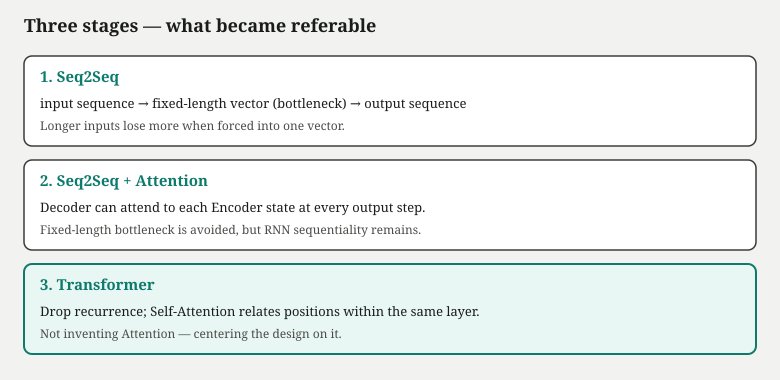
ここで混同を避ける。Attention はまだ Transformer ではない。Bahdanau の Attention は RNN Encoder の隠れ状態列と RNN Decoder の組み合わせの上に載る。Encoder も Decoder も逐次更新であり、Attention は「どの入力位置を読むか」の重みづけを追加したにすぎない。Self-Attention ですべての位置が互いに直接つながり、再帰を捨てるのは Vaswani らの Transformer（次章の段階3）である。
内部：参照の計算
スコア \(e_{t,i} = \text{score}(s_t, h_i)\) を各入力位置 \(i\) で計算し、\(\alpha_{t,i} = \text{softmax}_i(e_{t,i})\)。\(s_t\) は Decoder の状態、\(h_i\) は Encoder の第 \(i\) 位置の表現。加法的 Attention では MLP がスコアを出す。生成は依然として \(y_{t-1}\) に依存する自己回帰であり、出力側の逐次性も残る。改善されたのは入力情報の引き出し方であり、計算グラフの時間方向の鎖そのものではない。
改善と未解決
改善: 長い入力でも、生成ステップごとに関連箇所を選べる。翻訳・要約の品質が Encoder–Decoder 単体より安定しやすい。Attention の重みを可視化すると、語対応らしいパターンが見えることもある——ただし重み＝説明とは限らない（のちの論争カードへ）。
未解決: RNN の逐次性は残る。Encoder は入力を左から順に読み、Decoder は出力を左から順に書く。学習も推論も、時間方向の依存鎖がボトルネックになる。Attention は参照の柔軟性を増したが、並列学習や長系列の計算効率の根本解ではない。図の段階3が示すように、次の問いは——再帰自体を捨て、系列全体を並列に変換できる設計は何か——へ移る。
いまどこに残っているか
Bahdanau 型の Encoder–Decoder Attention は、機械翻訳黄金期の標準だった。いまの位置は次のとおりだ。
| 技術 | いまも使われる場所 | 現行 LLM では |
|---|---|---|
| RNN Seq2Seq + Attention | 古典 MT パイプラインの理解、教育資料、一部の専用系列変換 | 汎用 LM の主流ではない |
| Encoder–Decoder Transformer | 翻訳・要約の専用モデル、一部の seq2seq タスク | 汎用チャットは Decoder-only が中心；Enc–Dec は用途分岐 |
事実: 「Attention」という語はここから広まったが、現行 LLM の Self-Attention とは段階が違う（次章）。議論: Enc–Dec が翻訳専用で最適か、Decoder-only で十分かはタスク依存の工学判断である。
次に立つ問題
Encoder–Decoder Attention は「出力が入力のどこを見るか」を学習した。次章では、Encoder と Decoder の区別を超え、Self-Attention（QKV） ですべての位置が互いに混合し、RNN を使わない Transformer が系列変換と言語モデルの主流になる。学習時の並列化と、生成時の因果自己回帰の分離——そこが段階3の核心だ。
ボトルネックの出口に立った参照装置は、まだ逐次の読み書きの上に載っている——全員が同時に全員を見る部屋へは、まだ入っていない。
Transformer
前章の Encoder–Decoder Attention は、固定長ベクトルへの圧縮を回避した。しかし Encoder も Decoder も、内部では LSTM が時間方向に逐次展開されていた。学習の各ステップで、隠れ状態は左から右へしか流れない。系列が長いほど、バッチ内の並列化は「バッチ次元」に限られ、位置方向の並列 は原理的に塞がれていた。
Vaswani らの Transformer（*1）は、Attention を発明したわけではない。Bahdanau らが示した soft-search の延長線上に Self-Attention がある。Transformer が変えたのは、再帰（recurrence）も畳み込み（convolution）も主役にせず、Self-Attention を層の中心 に据え、系列長方向の変換を行列演算の束として書き直した点である。翻訳タスクでは Encoder–Decoder 両方を Transformer ブロックで構成したが、後の大規模言語モデル（LLM）が引き継いだのは、因果マスク付き Decoder-only スタックの系譜である。
Transformer ブロックの部品
一つの Transformer ブロック は、ざっくり次の部品で構成される。
- Multi-Head Self-Attention — 各位置が Query・Key・Value を持ち、系列内の他位置と加重混合する
- Position Encoding — 注意自体は順序を区別しないため、「何番目か」の情報を別途付与する
- Feed-Forward Network（FFN） — 位置ごとに同じ MLP を独立に適用し、非線形変換を加える
- Residual Connection — サブ層の入出力を足し、深いスタックでも勾配が流れるようにする
- Layer Normalization — 各サブ層の前後で正規化し、学習を安定させる

Self-Attention の核は Scaled Dot-Product Attention である。位置 i の Query（問い） と位置 j の Key（鍵） の内積で類似度を測り、softmax で重みにし、Value（値） の加重平均を取る。
$$\mathrm{Attention}(Q,K,V)=\mathrm{softmax}\!\left(\frac{QK^\top}{\sqrt{d_k}}\right)V$$
$\sqrt{d_k}$ で割るのは、次元 $d_k$ が大きいとき内積の分散が暴れ、softmax が一箇所に尖りすぎるのを防ぐためである。Multi-Head Attention は、この操作を複数の部分空間で並列に走らせ、ヘッドごとに異なる依存——主語–述語、修飾–被修飾——を分担させる。

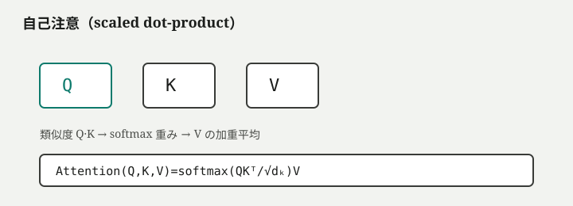
シミュレーションを開く — 各位置の更新は value の加重平均であり、重みは query–key 類似度から決まる
Q・K・V は同じ埋め込みから学習された線形写像で作られる。離れたトークン同士の value が混ざれば、述語位置の表現は主語の情報を借りられる——RNN が一つずつ圧縮した隠れ状態を運ぶ経路とは別物だ。
Position Encoding は、集合として等しい Self-Attention に順序を戻す留め具である。Vaswani らは正弦波の固定エンコーディングを用いたが、現行 LLM では学習可能な位置ベクトルの加算や RoPE（Rotary Position Embedding）など相対位置写像が広く使われる。いずれも「内容の混合」と「順序の印」は別経路である。
FFN は通常、中間次元を拡大した二層 MLP である。Attention が系列内で情報を再配分するのに対し、FFN は各位置の表現を局所的に非線形変換する。パラメータの相当部分は FFN に載るモデルも多い。
Residual Connection と LayerNorm は、十数層から百層近いスタックを学習可能にする実装の骨格である。サブ層の出力を入力に足すことで、層が「恒等写像に近い更新」から始められる。
学習と生成：並列化できるのはどちらか
Transformer の導入で最も誤解されやすいのは、「速いから全部並列」と捉えることだ。正確には、学習時 と 生成時 で制約が異なる。
学習時、正解テキスト全体が与えられる。各位置の損失を同時に計算できる——因果マスクがあっても、位置 1 から $n$ までの表現は一度の forward で並列に求まる。RNN が時間 $t$ の計算を $t-1$ の完了後にしか始められないのに対し、Transformer は 位置方向を並列化 できる。
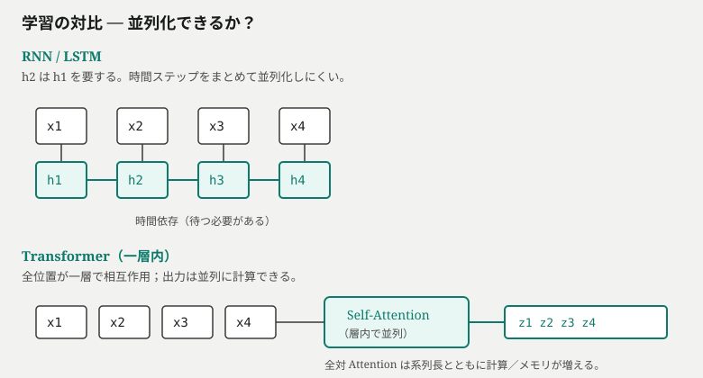
生成時、モデルは左から右へ 1 トークンずつ 出す。因果自己回帰 のループは変わらない。各ステップで接頭辞全体に forward し、最終位置の分布から次トークンを選び、列に付け足す。未来のトークンはまだ存在しない——学習時に並列だった位置方向も、推論の各ステップでは「これまで確定した接頭辞」に対する一回の計算に縮む。
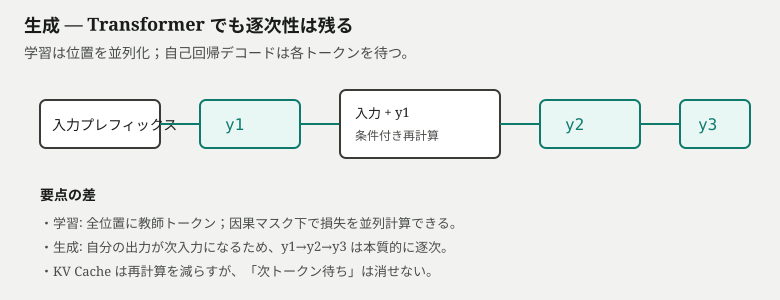
シミュレーションを開く — 学習では位置並列化できるが、自己回帰生成の逐次性はアーキテクチャを替えても残る
この対比が、後の「学習は GPU で一気に、チャットは一文字ずつ」という製品体感の技術的根拠である。Transformer は RNN の時間方向ボトルネックを外したが、生成の逐次性 は因果マスクと自己回帰の定義から消えない。
因果マスクと自己回帰ループ
Decoder 側の Self-Attention には 因果マスク（causal mask） をかける。位置 i は i より右の key に重みを置けない。softmax 前に未来位置のスコアを $-\infty$ 相当で落とし、重みをゼロにする。これにより、学習時も推論時も「まだ書いていない未来」を条件に入れない。

混ぜた表現から最終位置に語彙全体の logits が出る。そこから 1 トークン を選び、列の末尾に付ける。選ばれたトークンは確定し、次のステップの接頭辞に含まれる。チャット UI で文字が左から流れるのは演出ではなく、このループの観測面である。
何を解決し、何を変えなかったか
| 対象レイヤー | 解決した問題 | 変えなかったもの | 新しいコスト | 現在の位置づけ |
|---|---|---|---|---|
| アーキテクチャ（系列変換） | RNN の時間方向逐次学習；固定長ボトルネック（Attention 併用時） | 次トークン予測の目的；自己回帰生成の逐次性 | 系列長 $n$ に対し注意が $O(n^2)$ の計算・記憶 | 2020年代の LLM 主流骨格；代替（SSM 等）は併存 |
| 表現（混合） | 離れた依存の直接参照 | 埋め込み・分散表現の必要性 | 長文ほどメモリと遅延が増える | 窓内の文脈統合の既定手段 |
| 学習（並列） | 位置方向の並列損失計算 | 大規模データと計算資源の要求 | 長系列バッチのメモリピーク | 事前学習スケールの前提技術 |
| 推論（生成） | —（逐次は残る） | 1 トークンずつ確定する手順 | 接頭辞が伸びるほど各ステップのコスト増 | KV Cache 等は次章以降の提供層 |
Attention は長距離依存の運搬を改善しうるが、文脈窓 の外へは届かない。計算量の二乗スケールは、製品のコンテキスト上限や FlashAttention などの実装最適化議論の土台になる。
いまどこに残っているか
| 技術 | いまの位置 | 製品・系の例（例示） |
|---|---|---|
| Transformer（Self-Attention 骨格） | 現行 LLM の主流 | GPT 系、Claude 系、Gemini 系、Llama 系、Qwen 系 など |
| RNN Encoder–Decoder（前章） | LLM 骨格としては退場；専用系列タスクの遺産 | — |
事実: 2020 年代の大規模言語モデル製品の中心計算グラフは、Transformer 系（多くは Decoder-only）である。議論: この主流が「最終形」かどうかは第4部の論争（Transformer は終わるのか）へ送る。FlashAttention や MoE は、この骨格の後継ではなく、のちの層マップで見る層内改善である。
未解決と次に生じた問題
Transformer 単体では、「どれだけ大きく事前学習すれば汎用能力が出るか」「Decoder-only に寄せたとき何が変わるか」はまだ開いていた。骨格が整ったあと、業界は スケール と データ の次元へ移った。同時に、注意の重みを見せても 説明 にはならない、という解釈論争も残る。
論争カード：Attention の重みは説明になるか
| 立場 | 内容 |
|---|---|
| 強い主張 | 重みのヒートマップは、モデルが「どこを見たか」の説明になる |
| 反論 | 重みは query/key の幾何学の産物であり、後追い可視化に過ぎない。同じ出力でも重みは層やヘッドで分散し、反実仮想の検証なしに因果を断定できない（*2） |
| 実務上の線引き | 重みは デバッグの手がかり にはなりうるが、信頼境界 の根拠にはならない。引用照合・反例プロンプト・外側計算が別層で必要 |
TransformerからLLMへ
Transformer は系列を変換するアーキテクチャの名前である。大規模言語モデル（LLM） は、因果デコーダ型 Transformer を骨格に、巨大コーパスで 次トークン予測 を長く回し、十分な規模に達したチェックポイントに付けられる呼び名に近い。骨格が同じでも、データ量・パラメータ数・トークン化・文脈長・推論手順が違えば、振る舞いは別物になる。
前章の出口は「学習は並列化できるが生成は逐次」だった。本章は、その骨格の上に 何を積み上げたら LLM と呼ぶのか を見る。Decoder-only への寄せ、スケーリング則、サブワード トークン化、有限 文脈窓、そして重みを動かさない 文脈内学習（In-context Learning, ICL） が、現行レジームの柱である。
Decoder-only 事前学習
Vaswani らの原論文は Encoder–Decoder だが、GPT 系（Radford ら）以降の主流は Decoder-only である。単一の因果 Transformer スタックが、左から右への 自己回帰 でテキスト全体をモデル化する。翻訳のように「入力列」と「出力列」を分ける必要がない 一般言語モデリング に直結する。
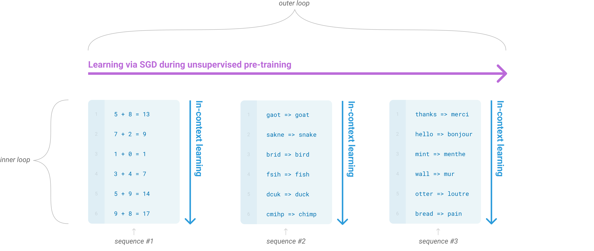
訓練データはウェブ文書、書籍、コードなどの生テキストが多い。各位置で「次に来るトークン」の尤度を上げる——目的は C0 で固定した 条件付き次トークン予測 のままである。チャットの「意図」や「安全」は、この段階の損失には入っていない。
スケーリング則
Kaplan ら（*2）は、モデルサイズ $N$、データ量 $D$、計算量 $C$ と検証損失の間に べき乗則 が見えると報告した。同じアーキテクチャ族の中では、大きくするほど損失が下がりうる——ただし $N$・$D$・$C$ のバランスを外すと改善が頭打ちになる。
これは「大きければ何でもできる」という予言ではない。同じ骨格でスケールを上げたとき検証損失がべき乗で改善する、という 経験則 である。実務では、モデルを大きくするか、同じサイズでもデータを増やすか、計算予算を増やすか——三つのレバーが絡み合う。Chinchilla 系の議論（Hoffmann ら）は、同じ計算予算なら「小さめのモデル＋より多くのトークン」の方が損失が良い場合があると示し、単純なパラメータ競争だけではないことを突きつけた。
業界が 100B 級へ進んだ動機の一つが Kaplan 型の法則にある。一方、データの重複、低品質コーパスの混入、評価ベンチへの過適合、推論時のメモリと遅延は、スケールの「上」に乗る別の制約として残る。スケーリングは 損失とベンチの相関 を動かしうるが、個別タスクの正しさや安全を自動保証するわけではない。
トークン化：単語の前にサブワード
生テキストはそのまま行列に入らない。Byte Pair Encoding（BPE） などのサブワード トークン化 で離散 ID 列に変換する（Sennrich ら, 2016）（*3）。語彙は数万規模に抑えつつ、未知語はより小さな断片に分割される。
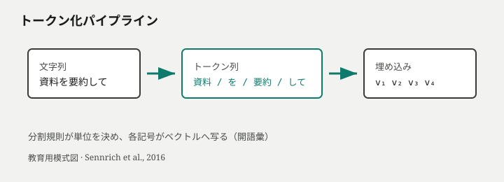
トークン境界はモデルが見る「単語」の単位を決める。日本語のように空白が薄い言語では、同じ文字列でもトークン分割が性能やコストに効く。トークン化は 表現層 の設計であり、Attention の式そのものではないが、LLM システムでは避けて通れない。
文脈窓と In-context Learning
GPT-3（Brown ら, 2020）は 1750 億パラメータ規模で、勾配更新なし の zero-shot / one-shot / few-shot 条件付けに応じてタスク性能が伸びうることを示した（*4）。これが 文脈内学習（ICL） として知られる現象である。例示を接頭辞に並べるだけで、重みは固定のまま 条件付き分布 の形が変わる。
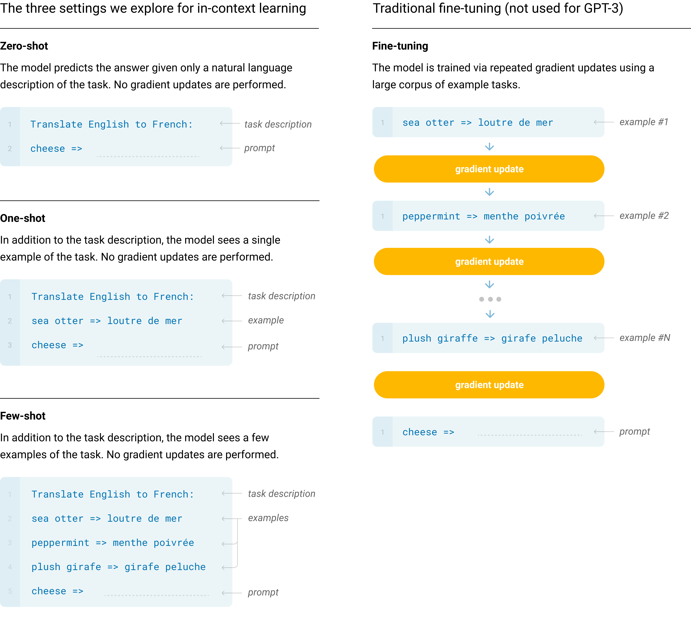
fine-tuning は学習フェーズでパラメータを動かす。few-shot は推論時の 文脈窓 内の列操作である——混同すると「例を足したから学習した」と誤解する。
たとえば接頭辞に
英語: I love you. 日本語: 私はあなたを愛しています。
英語: Good morning. 日本語:のような対が並べば、次トークンの分布は日本語訳の続き寄りに偏る。例が増えるほど形式の手がかりが強くなる。Brown らは、モデル規模とデモ数の増加に伴い in-context 性能が伸びうると報告している——ただしこれはパラメータ空間での学習ではなく、窓内の実演 である。ICL は 重み更新なしのタスク切替 の入口だが、窓の外の例は使えないし、例の順序や書式に敏感でもある。
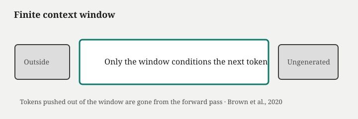
シミュレーションを開く — 文脈窓の外側のトークンは、以降の forward に一切入らない
GPT-3 の文脈長は $n_{\mathrm{ctx}}=2048$ トークンと報告されている。製品世代では数万トークンへ伸びているが、原理は 有限 である。長い会話の冒頭で共有した前提が後半で参照されない現象の一端は、単に「忘れた」のではなく、窓から落ちた可能性がある。
Liu らの Lost in the Middle（*5）は、窓内に収まっていても、先頭と末尾付近の情報ほど活用されやすく、中間に置いた根拠は性能が落ちうる ことを示した。窓を広げても、均等な長文理解が自動では保証されない。
何が「LLM 化」したか
| 要素 | Transformer 単体 | LLM レジーム |
|---|---|---|
| 骨格 | 系列変換ブロック | 因果 Decoder-only が主流 |
| 学習 | タスク依存のデータ | 大規模一般コーパスでの長期事前学習 |
| 規模 | 数百万〜億級もあり得る | $N$・$D$・$C$ のスケールが性能の主要レバー |
| 適応 | fine-tuning が典型 | ICL で重み固定のタスク切替が実用域に |
| 制約 | $O(n^2)$ 注意 | 有限文脈窓＋位置バイアス（Lost in the Middle） |
Transformer が 並列学習可能な骨格 を与え、スケールとデータが 汎用らしさ を押し上げ、有限窓と ICL が 推論時の条件付け を可能にした——この三つが重なって「LLM」と呼ばれるチェックポイントが生まれた。
いまどこに残っているか
| 要素 | いまの位置 | 備考 |
|---|---|---|
| Decoder-only + 大規模事前学習 | チャット／生成 LM の既定レジーム | GPT / Claude / Gemini / Llama / Qwen など公開・商用の多く |
| Encoder–Decoder 専用モデル | 翻訳・要約など用途分岐 | 汎用対話の中心ではない |
| 文脈窓の拡大 | 製品ごとに伸長中だが有限 | Lost in the Middle は窓内でも残る |
事実: 「Transformer」と「LLM」は同義ではない——後者は骨格に加え、スケール・データ・有限窓・（次章の）後学習が重なったレジームである。議論: スケーリングがどこまで続くかは下記カードと第4部へ。
未解決：スケールの先と意図とのずれ
スケーリングは損失とベンチを動かしうるが、事実性・有害出力・ユーザ意図 との一致は事前学習の損失に含まれない。ウェブの続きとして尤もらしい toxic な列も、尤度の観点では「当たり」になりうる。次章の 後学習 は、このずれを製品層で部分的に埋める試みである。
論争カード：スケーリングはまだ続くのか
| 立場 | 内容 |
|---|---|
| 続く派 | Kaplan 型の法則がアーキ改良とデータ品質改善で延長しうる。計算投資の限界まで損失は下がる |
| 頭打ち派 | データ枯渇、重複、評価飽和、推論コストで、同じレシピの単純拡大は边际効用が下がる |
| 線引き | スケールは 観測された強い相関 であり、個別タスクの保証ではない。MoE・推論最適化は「大きさ」の別次元 |
Base Model から Chat Model へ
同じアーキテクチャでも、チェックポイントによって振る舞いはまるで違う。ベースモデルに長文を渡すと、引用や物語の 続き が出やすい。チャット向けモデルに質問形を渡すと、答え形の散文や丁寧な拒否が出やすい。パラメータ数が同じでも、事前学習だけ の Base Model と、後学習（Post-training） を経た Chat Model では、次トークン予測 分布の形が変わる。
前章までの LLM は、ウェブ文書の続きを当てる装置に近かった。製品の対話は、ユーザの意図・口調・安全基準と一致しない。本章は、そのギャップを Instruction Tuning・RLHF・DPO でどう埋めようとしたかを追う。
Base Model と Chat Model
Base Model（基盤モデル）は、大規模コーパスで因果言語モデリングを終えた時点の重みである。「次のトークン」を当てる能力は高いが、質問に答える・有害依頼を断る・一貫したアシスタント口調を保つ——といった 対話契約 は最適化されていない。
Chat Model（チャットモデル）は、Base の上に 後学習 を載せたチェックポイントである。骨格は同じ Transformer 系 自己回帰 生成のまま。変わるのは学習データの形と、段階ごとの目的関数である。
Supervised Fine-Tuning（SFT）と Instruction Tuning
教師あり微調整（Supervised Fine-Tuning, SFT） は、人間が書いた「指示 → 望ましい応答」の対を大量に見せ、応答側のトークン列を正解として尤度を上げる段階である。指示追従を主目的にした SFT は Instruction Tuning と呼ばれることが多い。
入力にユーザ風の指示列、出力にラベラーが書いたアシスタント風の続きを置き、続き部分の次トークン損失だけを下げる。アーキテクチャも 因果自己回帰 のループもサンプリング手順も変わらない。
たとえば指示が「次の段落を三行で要約せよ」で、示范応答が箇条書き三行なら、SFT 後は同型の接頭辞のあとに箇条書き記号のトークンが出やすくなる。有害依頼に対し示范が丁寧な拒否文なら、その拒否の型が分布に載る。どちらも「正解の続きを当てる」訓練であり、拒否の倫理を定理証明しているわけではない。
載るのは口調・形式・拒否の 型 であり、世界の真偽を保証する機構ではない。示范に「丁寧に答える」型ばかりあっても 幻覚（尤もらしい偽） は消えない。示范にない依頼——データに少ない言語や専門領域——には、事前学習の癖がそのまま漏れる。データに含まれる文体の偏り——過度な謝罪、決まり文句の「AI アシスタントとして」——も分布に刻まれる。
RLHF：選好から方策へ
SFT だけでは、同じ指示に対する複数の妥当な応答のうち「より良い」方は決まらない。有害依頼を断るべきか、意図を汲んで答えるべきかの境界も、示范だけでは一義にならない。
Ouyang らの InstructGPT（*1）は、三段パイプラインを示した。
- SFT — 示范による微調整
- 報酬モデル（Reward Model, RM） — ラベラーによる応答比較から選好を学習
- 強化学習（RL） — RM のスコアを最大化するよう方策を PPO で更新
これが 人間フィードバックからの強化学習（Reinforcement Learning from Human Feedback, RLHF） の典型形である。
RM は、生成されたトークン列全体にスカラー値を付ける「選好の代理」である。ラベラーは、より helpful（役に立つ）、honest（誠実）、harmless（害が少ない）と感じる方を選ぶよう指示される——好みの定義はラベル集団と指示文書に依存する。SFT だけでは決められない「短く要点だけ述べる A と、背景を五段落添える B のどちらが良いか」も、比較データで RM に学習させる。
RL 段階では、方策が出した列に RM が点数を付け、PPO（Proximal Policy Optimization）で方策を更新する。KL ペナルティで SFT から離れすぎないよう元方策に引き戻す——更新が暴れないための留め具である。各段で「何を良しとするか」がすり替わる——最下層はコーパス尤度、その上は示范、その上は比較選好、最上段は RM スコア最大化である。

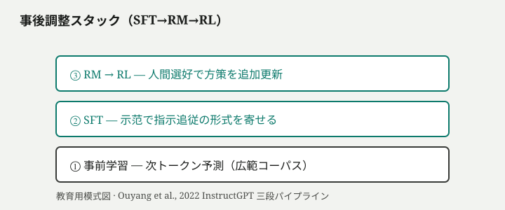
Ouyang らは、パラメータ 1.3B の InstructGPT が、175B の未調整 GPT-3 より人間評価で選好される 例も報告した。サイズだけでは説明できない 後学習層 の効果である。同時に alignment tax（整列の代償） も報告されている——整列後に一部の NLP ベンチでスコアが下がるタスクがある。
Direct Preference Optimization（DPO）
RLHF は RM と PPO の実装・安定化コストが高い。Direct Preference Optimization（DPO）（Rafailov ら, 2023）（*2）は、選好データから 明示的な RM+RL なし に方策を最適化する手法として提案された。目的は同じく「人間が選んだ応答を増やす」だが、パイプラインが短く、再現しやすい。
DPO も 事実性の保証 ではない。選好データに含まれる文体・文化・安全方針の偏りが、そのまま分布に刻まれる。ラベラーが気づかない plausible な偽は、報酬を取り続けうる。
整列が変えるものと変えないもの
| 層 | 後学習で変わりやすい | 単体では保証されない |
|---|---|---|
| 振る舞い | 口調、箇条書き、丁寧な前置き、拒否の定型 | 算術・最新事実・社内非公開知識 |
| 分布 | 指示形接頭辞のあとの応答形 | 幻覚（尤もらしい偽）の根絶 |
| 評価 | 人間選好・有害性ベンチの改善 | ベンチ得点＝実社会能力 |
文脈内学習（ICL） でプロンプトを書き足すのは、窓内の条件付けである。SFT/RLHF/DPO は 重みそのもの に別の目的を刻む。製品差——拒否の強さ、冗長さ、敬語——の相当部分は、Chat チェックポイントかどうかに依存する。
Ouyang ら自身も、RLHF 後なお単純な誤りが残ると報告している。口調が整った直後に算術を誤る——後学習は振る舞いの接口を変える が、知識更新と外界操作は別問題として残る。
論争カード：整列は能力を削るか（alignment tax）
| 立場 | 内容 |
|---|---|
| 削る | 拒否を強めるほど有用な依頼まで断る。丁寧さを増やすほど冗長。汎用ベンチで未調整 Base より下がるタスクがある |
| 削らない／相殺 | 指示追従と有害性低減は製品価値そのもの。別ベンチ・別タスクでは整列後の方が上がる。1.3B 整列＞175B 未整列はサイズ信仰への反証 |
| 線引き | 整列は 一つの目的関数への最適化 であり、全能のトレードオフ表ではない。何を「能力」と数えるかで評価は割れる |
いまどこに残っているか
| 技術 | いまの位置 | 備考 |
|---|---|---|
| SFT / Instruction Tuning | 製品チャットのほぼ必須層 | Base をそのまま出す系は研究・一部 API に限定されやすい |
| RLHF（RM + RL） | 大規模ラボの標準パイプラインの一つ | 実装コスト高；代替手法と併存 |
| DPO 等の選好最適化 | オープンウェイト／再現性重視の現場で広く採用 | RLHF の短縮形として使われることが多い |
事実: ユーザーが触る「Chat モデル」の口調・拒否・指示追従の多くは後学習層の産物である。議論: 整列が能力を削るか（alignment tax）は下記カードへ——事実保証の話ではない。
比喩（最後に）
後学習を、同じエンジンに 別の運転マニュアルとペナルティ表を載せた と捉えると誤解は減る。エンジン（事前学習の予測力）はそのまま、ハンドルとブレーキの感覚（口調・拒否）だけが調整された——それでも道路標識（事実）までは自動では書き換わらない。
ここまでで主流骨格は Decoder-only Transformer + 大規模事前学習 + 後学習 に到達した。これ以降の章は、この骨格の『次の発明』ではなく、どの層を改善しているかの地図で読む。
第2部 現在のLLMは何層でできているか
第1部で到達した主流骨格——Decoder-only Transformer、大規模事前学習、後学習——の先に、名前が大量に増える。ここからは年表を一本で進めるのではなく、二つの木を手に入れる。ひとつは技術史・研究系譜（時間）、もうひとつはシステム構成（組み立て）。新しい技術名を聞いたとき、「Transformer の次」と短絡せず、どちらの木の、どの動機／層の、改善なのか置換なのかを問う。
現在のLLMは何層でできているか
第1部の出口までで、主流の骨格はほぼ見える。Decoder-only Transformer が系列を変換し、巨大コーパスで次トークンを当て、後学習で対話の口調と拒否境界を載せる。ところがニュースや製品発表に出てくる名前——MoE、FlashAttention、KV Cache、RLVR、RAG、Agent、Mamba——を、この一本道の「次の駅」として並べると、地図が壊れる。
壊れる理由は、名前が一つの「木」に載っていないからではない。種類の違う木が混ざるからである。ここからは図を二つに分ける。
二つの木——系譜と構成
| 木 | 何の木か | 辺の意味 | 例 |
|---|---|---|---|
| Tree ① 技術史・研究系譜 | 時間／発明のつながり | 「前のボトルネックを解いた」「同じ研究圧力への応答」 | RNN → Transformer；Transformer の下に MoE / FlashAttention |
| Tree ② システム構成 | 製品の組み立て（時間ではない） | 「依存する／層として載る」 | モデルの上に学習・推論・高速化；外に RAG / Agent |
MoE と Agent を同じ親の下に並べると、後者だけ性質が違う。Agent は Transformer から派生した発明ではなく、Transformer（など）を利用するアプリケーション構成である。RAG・Tool・MCP・Memory も同様——系譜の子ではなく、構成の外層である。
Tree ①：技術史（時間）
第1部が辿った一本道は、ここまででよい。

Transformer 以降は「次の駅」ではなく、動機ラベル付きの枝で読む。枝名が「なぜその技術が生まれたか」を先に言う。
| 動機ラベル（枝名） | そこに載る技術の例 | 変えにくい骨格 |
|---|---|---|
| 巨大化したい | Dense、MoE | Self-Attention＋自己回帰 |
| 長文を扱いたい | RoPE、YaRN、長文脈、GQA/MLA | 有限窓という制約自体 |
| 推論を速くしたい | FlashAttention、KV Cache、投機的デコード、量子化 | 条件付き分布の意味 |
| 推論・整列を伸ばしたい | SFT/RLHF/DPO、CoT、TTC、RLVR | 次トークン生成という手続き |
| 骨格を疑う／置き換える | Mamba、Hybrid、Diffusion LM | （ここだけ幹が変わる提案） |
展開の一例として、モデル構造だけを開くと Dense / MoE の部品棚になる。
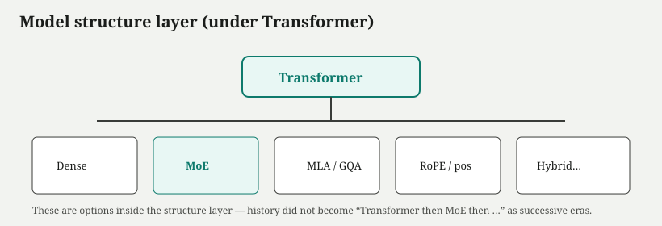
Tree ②：システム構成（時間ではない）
いまの LLM 製品を切る木は、年表ではない。技術名を受け取ったときの置き場である。

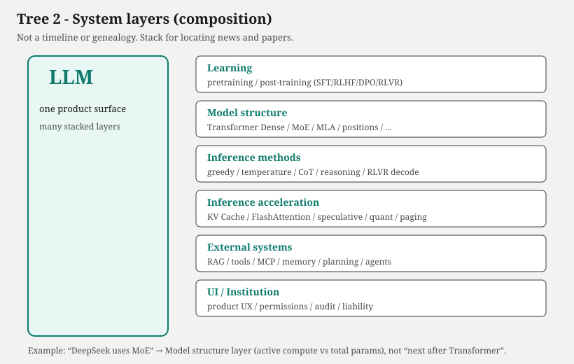
| 層 | そこで起きていること | 例 |
|---|---|---|
| 学習方法 | 何を目的に重みを更新するか | 次トークン事前学習、SFT、RLHF、DPO、RLVR |
| モデル構造 | どの計算グラフで表現を作るか | Dense Transformer、MoE、位置表現、MLA/GQA |
| 推論方法 | 分布からどうトークン列を組み立てるか | temperature、CoT、test-time compute |
| 推論高速化 | 同じ答えをより安く速く出すか | KV Cache、FlashAttention、量子化、投機的デコード |
| 外部システム | モデル外の記憶・行為・検証 | RAG、Tool use、MCP、Agent、メモリ |
| UI / 制度 | 人と組織がどう触り、誰が責任を負うか | チャット UI、権限、監査、法的責任 |
事実: RAG / Tool / Agent はモデル外側の契約である。誤りやすい絵: Transformer → MoE → Agent。正しい絵は、系譜では Transformer → MoE、構成では LLM system → External systems → Agent である。
混同を避ける三分法（系譜側）
Tree ① の中だけでも、次の三つを混ぜない。
| 型 | 意味 | 例 |
|---|---|---|
| 骨格の後継 | 前の主流解法が潰れて、別骨格が中心になる | RNN → Transformer |
| 層内・動機枝の改善 | 同じ骨格のまま、ある圧力に応答する | MoE、FlashAttention、RoPE |
| 置換／併用の枝 | 主流骨格を置き換える、または混ぜる提案 | Mamba、Hybrid、Diffusion LM |
ニュース診断の型
「DeepSeek が MoE を採用」と聞いたとき、まず どちらの木の話か を選ぶ。
- Tree ①か Tree ②か — 発明・系譜の話か、製品のどの層が動いたかの話か。
- 層／動機はどこか — MoE なら系譜では「巨大化」、構成では「モデル構造」。
- 変えなかったものは何か — 多くの場合、Self-Attention と自己回帰生成という骨格は残る。
「だから何？」への短い答えは、こうなる。同じ（または近い）品質帯を、トークンあたりの活性計算量を抑えて狙う構造選択であり、Transformer 時代の終焉宣言ではない。
FlashAttention なら Tree ①で「速くしたい」、Tree ②で推論高速化層。RAG なら Tree ①には載せない——Tree ②の外部システム層だけ。RLVR なら学習方法と推論方法の境目。層が違えば、読むべき指標も違う。
ここから先の読み方
第1部の各駅末尾にあった 「いまどこに残っているか」 は、技術史を現代へつなぐ表だった。本章の二つの木は、それとは役割が違う——新しい名前を、系譜のどの動機枝か／構成のどの層か に落とす道具である。
第3部は、Tree ②の各層（と Tree ①の動機枝）を順に見る。順序は歴史の必然ではない。各章の冒頭で「対象レイヤー／改善対象／変えなかった骨格」を固定する。第4部で論争を束ね、第5部で自分の立場を選ぶ——そこで二つの木を一枚に重ねた図を回収する。
地図を持たないまま部品名を増やすと、また一本道の幻に戻る。ここでの出口は一つだけだ。新しい技術名は、まずどちらの木か、次に動機または層を名指し、改善か置換かを問う。
第3部 各層の最新技術
地図の各層で、いま何が改善されているかを見る。順序は歴史の「次の駅」ではない。モデル構造、推論高速化、推論方法、外部システム、そして骨格の置換枝——それぞれが別の改善対象を持つ。章の冒頭で必ず「どの層か／何を改善するか／何は変えないか」を固定する。
モデル構造の部品——DenseとMoE
| 項目 | 内容 |
|---|---|
| 対象レイヤー | モデル構造（Tree ②） |
| Tree ①の動機枝 | 巨大化したい（Dense / MoE）——Transformer 系譜の内側 |
| 改善対象 | 密なスケールにおける容量と活性計算の分離——総パラメータを増やしつつ、各 forward で動かす重みを抑える |
| 変えなかった骨格 | Decoder-only Transformer の Self-Attention と 因果自己回帰 生成 |
| 新しいコスト | ルーティング偏り、Expert 間通信、負荷分散、活性パスの再現性 |
| 現在の位置づけ | 主流部品（大規模オープンウェイト・商用の一部で採用）。例: Mixtral、DeepSeek（MoE 系）、Grok、Qwen MoE 系など——いずれも Transformer 骨格上の構造選択 |
第1部の出口で骨格は固定された。Decoder-only Transformer が系列を変換し、事前学習と後学習が分布を形作る。ニュースで「MoE 採用」と出ても、それは Transformer の後継ではない。多くの実装では、Attention ブロックはそのままに、層内の FFN（Feed-Forward Network、フィードフォワードネットワーク） 経路だけを複数の専門家に差し替え、疎活性化（sparse activation） で幅を増やす——モデル構造層の部品選択である。
Dense：密な FFN が標準形
Dense（密） モデルでは、Transformer の各層に 単一の FFN が載る。全パラメータが毎回の forward で候補となり、活性計算量は総パラメータ数とほぼ一致する。Llama や GPT 系の古典的な大規模言語モデルは、この形が基準である。
Attention がトークン間の依存を取り、FFN がトークンごとの非線形変換を担う——この二段が層の骨格である。密に巨大化すれば表現容量は増えるが、学習・推論の FLOPs とメモリもほぼ比例して膨らむ。7000 億パラメータと書かれていても、毎ステップ全部が動くわけではない（MoE の場合）という話は後述するが、Dense では「書いてあるサイズ≒毎回動くサイズ」が既定である。
Mixture of Experts：正式定義
Mixture of Experts（MoE、専門家混合） とは、各 Transformer 層において、従来の単一 FFN の代わりに 複数の FFN（Expert） を並べ、ルータ（Router／ゲート） が入力トークンごとにそのうちの 少数だけ を選んで通す疎活性化アーキテクチャである。選ばれた Expert のみがそのステップで計算に参加し、残りは休む。契約は明確だ——総パラメータ数は大きくしうるが、各 forward で活性化するパラメータは一部に留まる。
ルータは通常、トークン表現から Expert への重み（または離散選択）を出す。Shazeer ら（2017）の Sparsely-Gated MoE が大規模言語モデルへの応用の原型としてよく引用される（1）。Jiang らの Mixtral 8×7B（2024）は、8 個の Expert から各トークンにつき 2 個を選ぶ構成で、総パラメータ約 47B に対し活性約 13B と報告している（2）——密な 70B 級と品質帯を比較しつつ、推論 FLOPs を抑える実例として参照される。

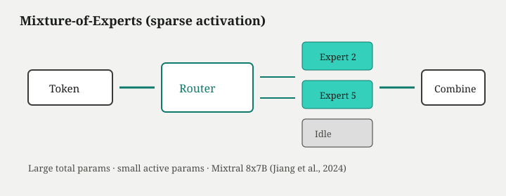
シミュレーションを開く — ルータが選ぶ専門家集合が変わると、同じ入力でも活性パスが変わる
図と sim が示すのは、同じ入力列でもトークン位置と内容によって Router の選択が変わり、内部の活性パスが分岐する点である。MoE は「賢さの新アルゴリズム」ではなく、FFN 経路の幅を疎に広げる構造部品である。Attention 骨格は変えない。
| 観点 | Dense（密） | MoE（疎活性） |
|---|---|---|
| 総パラメータ | ほぼ全部が常時候補 | 大きくしうるが全部は動かない |
| 推論時の活性計算 | 層ごとに FFN 全体 | Router が選んだ Expert のみ |
| 学習・運用 | 実装が単純 | Expert 間通信・負荷分散が課題 |
| 失敗の形 | 主にメモリ・遅延 | ルーティング偏り・活性パスの揺れ |
構造の周辺：GQA と MLA（軽く）
MoE 以外にも、モデル構造層では Attention まわりの部品選択がある。Multi-Query Attention（MQA） と Grouped-Query Attention（GQA） は、クエリヘッドは保ちつつキー・バリューヘッドを共有またはグループ化し、層内のヘッド構成を変える——詳細な推論コストは第8章の高速化層で扱うが、ここでは「構造としてヘッドの共有パターンを選ぶ部品」として位置づける。
Multi-head Latent Attention（MLA）（DeepSeek-V2 系）は、KV を低次元潜在表現に圧縮する構造変更として提案されている——これも Attention ブロックの内部形状の選択であり、Transformer の廃止ではない。いずれも 同じ次トークン予測の骨格 の上での配線の違いである。
新しく表面化するコスト
MoE は Expert をデバイス間に分割すると 通信 がボトルネックになる。Router の選択が偏れば特定 Expert だけが飽和し、負荷分散（load balancing） 補助損失や容量制約が必要になる。学習中のルーティングと推論時のルーティングがずれると、同じプロンプトでも再現条件を変えると活性パスが変わり、サンプリング以外の揺れ要因になりうる。
製品表記の「B」が総パラメータを指すとき、ユーザーが感じる「毎回動く脳みそ」の大きさとずれる——これは構造層の読み方の問題である。
いまどこに残っているか
| 構造 | いまの位置 | 例（例示・網羅ではない） |
|---|---|---|
| Dense Transformer | 依然として標準形の一つ | Llama 系、多くの GPT 系 Dense チェックポイント |
| MoE（疎活性 FFN） | 大規模での効率フロンティアを狙う主流部品 | Mixtral、DeepSeek MoE 系、Grok、Qwen MoE 系 |
事実: MoE は Attention を廃した新骨格ではなく、同じ次トークン／自己回帰契約の上での FFN 配線である。議論: Dense より常に優れるかは第4部へ。
比喩（最後に）
巨大組織で、案件ごとに少数の専門部署だけを動かし他は待機させる——MoE のイメージに近い。ただし比喩は補助に留め、先に固定すべきは 複数 FFN とルータによる疎活性 という機構の定義である。
論争カード：MoE vs Dense（短く）
| 立場 | 内容 |
|---|---|
| MoE 優位 | 同品質帯で活性 FLOPs を抑え、総容量を稼げる。Mixtral は密 70B 級との比較例として引用される（*2） |
| Dense 優位 | 実装・デバッグ・再現性が単純。通信とルーティング偏りの運用コストが小さい |
| 線引き | 「どちらが賢いか」ではなく、容量と活性計算を分離したいか の工学判断。詳細は第4部 |
推論を速くする——同じ骨格のまま
| 項目 | 内容 |
|---|---|
| 対象レイヤー | 推論高速化（Tree ②） |
| Tree ①の動機枝 | 推論を速くしたい——同じ骨格の提供改善（Agent や RAG とは別の木） |
| 改善対象 | 自己回帰生成の遅延・メモリ・スループット——同じ条件付き分布をより安く届ける |
| 変えなかった骨格 | 学習済み重みと 条件付き次トークン予測 の意味；モデル構造（Dense/MoE）そのもの |
| 新しいコスト | 量子化誤差、投機受理率の頭打ち、キャッシュ管理の複雑さ、実装依存の品質差 |
| 現在の位置づけ | 主流部品（本番推論の標準装備）。KV Cache・GQA・FlashAttention・量子化はほぼ既定；投機的デコードはレイテンシ要件の高い提供で採用 |
前章は モデル構造 ——FFN を Dense にするか MoE にするか——を見た。本章は別の枝である。推論高速化は、同じ骨格・同じチェックポイントで、トークンを一つずつ出す手続きを速く・軽くする層だ。ベンチの「賢さ」が跳ね上がったわけではない。遅延が下がった、同時セッションが増えた、GPU 枚数が減った——提供の問題である。
KV Cache：再計算を避ける
自己回帰生成では、各デコードステップで過去トークンへの注意が必要になる。毎回ゼロから計算すれば、長さに比例してコストが膨らむ。KV Cache（キー・バリューキャッシュ） は、すでに計算した層のキー（K）と値（V）を保持し、新しいトークン分だけ注意を更新する仕組みである。長い生成ほどキャッシュが膨らみ、バッチ同時実行と合わさると GPU メモリの主因になる——ここから先の部品は、そのメモリと帯域を削る。
GQA / MQA：キャッシュを小さくする構造選択
Multi-Head Attention（MHA） ではヘッドごとに独立した K/V がある。Multi-Query Attention（MQA） は K/V ヘッドを一つに共有し、Grouped-Query Attention（GQA） は複数クエリヘッドが K/V ヘッドのグループを共有する。いずれもクエリの表現力は保ちつつ、キャッシュサイズとメモリ帯域を削るトレードオフである。Llama 2/3 系など現行の大規模モデルで広く採用されている。第7章で触れた通り、これは構造層のヘッド配線の選択だが、動機の多くは推論時の KV コストにある。
FlashAttention：注意計算の実装最適化
理論上、注意は系列長の二乗に近いコストを持ちうる。FlashAttention（Dao ら, 2022）は、GPU の SRAM と HBM の間の入出力を削減する 実装最適化 である（*1）。アルゴリズムの「理解」や分布そのものを変えるわけではない。同じ Attention を、ハードウェアに合わせて速く回す枝である。
PagedAttention：キャッシュのメモリ管理
PagedAttention（Kwon ら, 2023）は、KV キャッシュを固定長ブロックに分割し、OS のページングに似た割当でメモリ断片化を抑え、同時セッション数を増やす——提供層のメモリ管理である（*2）。vLLM などの推論サーバで標準的な技法として広がった。
量子化：ビット幅を下げる
量子化（Quantization） は、重みや活性値のビット幅を INT8・INT4 などに下げ、推論メモリと演算を軽くする。分布の歪みに敏感で、校正データと実装品質に依存する。GPTQ や AWQ など手法は異なるが、共通して 数値表現の層 であり、表現能力の理論的交代ではない。
投機的デコード：草稿と検証
投機的デコード（Speculative Decoding）（Leviathan ら, 2022）は、小さな草稿モデルが複数トークンを先読みし、大モデルが並列検証して受理する——平均レイテンシを下げるが、正しさの保証ではなく 受理率の統計 である（*3）。草稿と本体の分布ずれでスループットが頭打ちになることもある。
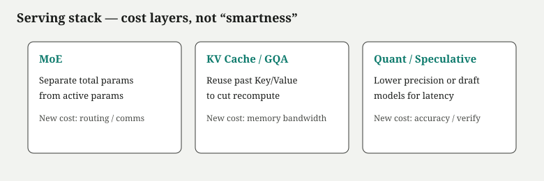
図がまとめるのは、これらがすべて 条件付き次トークン予測 の上に載るサービング・コンピュート層だという点である。Mamba や拡散 LM のような 骨格置換（第11章）とは別枝である。FlashAttention と Mamba を「同じ次の一歩」に畳まない——地図の分岐を保つ。
速くなっても変わらないもの
KV 最適化はメモリを節約しても、文脈窓 の有限性は消えない。量子化は誤差を導入しうる。投機的デコードは草稿の品質に依存する。いずれも「うまく動けば速い・安い」であり、事実照合・幻覚抑制・整列の保証は買わない。製品が速くなったからといって、パラメータ内にない知識が生まれるわけでもない。
推論のアルゴリズム——探索と考える時間
| 項目 | 内容 |
|---|---|
| 対象レイヤー | 推論方法（Tree ②；学習方法と境を接する） |
| Tree ①の動機枝 | 推論・整列を伸ばしたい——CoT / TTC / RLVR（後学習と隣接） |
| 改善対象 | 一発の次トークン列では踏み切れない多段推論——分布からどう切り出し、どれだけ列を伸ばすか |
| 変えなかった骨格 | 学習済み重みは固定のまま 次トークン予測 で列を伸ばす；真偽を保証する外部検証は別 |
| 新しいコスト | レイテンシ、トークン課金、overthinking、報酬ハッキング、再現性の低下 |
| 現在の位置づけ | 主流部品（チャット既定のサンプリング）＋急速に製品化された推論時拡張（CoT/TTC/RLVR） |
前章までで、同じ骨格を 速く 届ける層を見た。本章は 推論方法 ——固定された分布から、どのトークン列を選び、どれだけ長く生成するか——である。製品 UI に「考え中」と出ても、裏側は依然としてトークンを逐次生成している。人間の黙考とは別の機構だ。
分布からの切り出し：Sampling
各ステップでモデルは語彙上の logits を出し、softmax で確率分布に変換する。そこから次のトークンを一つ選ぶ手続きが デコード（Decoding） である。Greedy decoding は毎步 argmax——最も確率の高いトークンだけを取る。決定的で安いが、局所最適に閉じやすい。
Beam search は複数の仮説列を幅 \(k\) まで並行に伸ばし、累積対数尤度が高い列を残す。機械翻訳の時代から使われたが、長い対話や創造的生成では多様性を殺し、同じ繰り返しに閉じることがある。
温度（temperature） \(T\) は logits を \(1/T\) でスケールしてから softmax する。分布の鋭さだけを変え、真偽は変えない。\(T \to 0\) に近づくと Greedy に近づき、\(T > 1\) では裾が厚くなる。Top-k は確率質量の上位 \(k\) 個に質量を再正規化してから抽選する。Top-p（nucleus sampling） は Holtzman ら（2019）が提案した、累積確率が \(p\) を超える最小集合だけを残す方法である——固定 \(k\) より語彙サイズに応じた適応的な切り口になる（*1）。
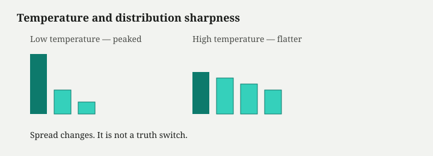
シミュレーションを開く — 温度は分布の鋭さを変え、選ばれるトークンの散らばりを変える（真偽スイッチではない）
低温度は揺れを抑えるが、分布の頂点にある誤った引用をより安定して繰り返す——サンプリングは真偽のつまみではない。
列を伸ばす：Chain-of-Thought と Test-time Compute
Wei ら（2022）の Chain-of-Thought（CoT） は、「段階を踏んで考えよ」という中間トークン列を先に生成させることで、算術や常識推論タスクの正答率が上がる例を示した（*2）。これはプロンプト設計による 文脈内 の操作であり、重みを更新しない。
Self-consistency は、同じ問題に対し複数の CoT 列をサンプルし、最終答えの多数決を取る。Best-of-N は複数完成列を生成し、報酬モデルや検証器で一つを選ぶ。いずれも 推論時計算（Test-time Compute, TTC） ——学習済み重みは固定のまま、デコード時の forward 回数と生成長を増やす——の家族である。
OpenAI の o1 系（2024）は、学習段階から長い内部推論列を引き出し、難問で推論時の計算を増やすと性能が伸びる、と報告している（*3）。UI の「考え中」は、この追加生成の待ち時間である。
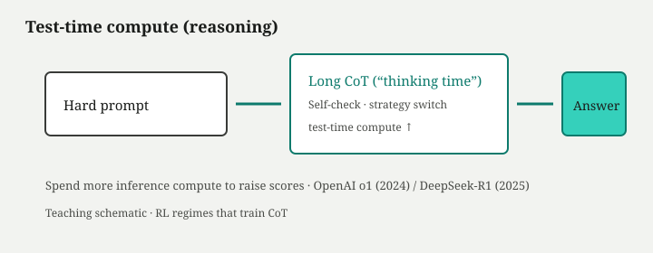
シミュレーションを開く — 同じ問題でも思考トークン予算を増やすと探索パスが変わりうる（真偽スイッチではない）
思考トークンを増やせば探索は広がりうる。しかし「考えるほど必ず正しくなる」とは限らない。Overthinking ——不要に長い推論列が正答を上書きし、ベンチで性能が落ちる——という報告もあり、予算と品質は単調ではない。中間列も次トークン予測の産物であり、尤もらしい誤推論（幻覚の一種）になりうる。
報酬で選好する：RLVR
RLVR（Reinforcement Learning from Verifiable Rewards） は、数学の正解、コードのテスト通過など 検証可能な信号 で方策を更新する枠組みである。DeepSeek-AI の DeepSeek-R1 報告（2025）は、SFT なしの R1-Zero でも長い推論列が現れ、検証可能領域でベンチが伸びる、と示している（*4）。
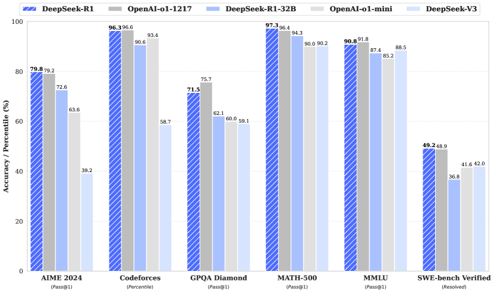
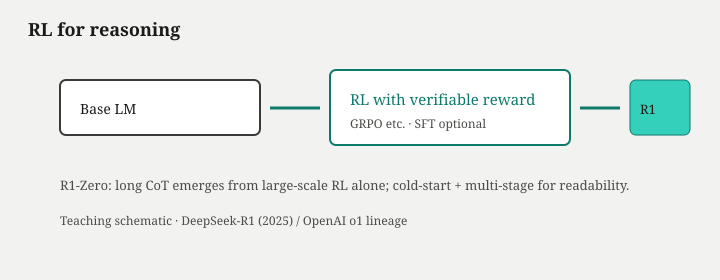
RL で伸びたのは「真理を照合する器官」ではなく、報酬に合致するトークン列の出現確率である。文献の実在、最新ニュース、社内非公開事実——照合義務のある領域では、長い思考を増やしても外側検証は省略できない。
論争の所在（短く）
CoT は推論そのものか痕跡か、RLVR は新能力か既存列の再重み付けか——これらは第4部で束ねる。ここでは事実だけ固定する：探索と推論時予算は正答率を変えうる が、正しさの保証や「新しい推理モジュール」の定義までは単体では約束しない。
外部システム——RAG・ツール・エージェント
| 項目 | 内容 |
|---|---|
| 対象レイヤー | 外部システム（Tree ②） |
| Tree ①での位置 | 載せない——RAG / Tool / MCP / Memory / Agent は Transformer の研究系譜の子ではない |
| 改善対象 | 凍結した重みと有限の文脈窓では触れない——知識更新・計算実行・長期状態・検証境界 |
| 変えなかった骨格 | モデル内部は依然として 条件付き次トークン予測 ；ツールの実行そのものはモデル外 |
| 新しいコスト | 検索品質、権限設計、オーケストレーション、監査、幻覚と参照の不一致 |
| 現在の位置づけ | 主流部品（製品の RAG・Tool use は標準オプション化） |
推論方法を振っても、パラメータ内にない事実は生まれない。社内規程の最新版、いまの株価、手元の CSV の集計——文脈窓と凍結した重みだけでは触れない。Chat Model の後学習は口調と拒否境界を寄せても、世界の更新や計算機の実行は組み込まれていない。
ここで木を取り違えない。誤: Transformer → MoE → Agent。正: 系譜ではモデル側の枝が止まり、構成では LLM system → External systems → Agent になる。RAG（Retrieval-Augmented Generation、検索拡張生成）、Function calling / Tool use、Agent オーケストレーションは、閉じた次トークン予測ループに 外側の情報と行為 を接続する アプリケーション層 である——Transformer から「生えた」発明ではない。モデル性能とシステム性能を混同しない——ここが本章の契約である。
RAG：外側メモリを窓に載せる
RAG とは、Lewis ら（2020）が示した Retriever + Generator の二部構成である。質問が来ると Retriever が外部コーパス——社内 Wiki、論文 DB、Web インデックス——から関連文書を取り出し、Generator（通常は事前学習済み言語モデル）がそれらを文脈窓内の接頭辞に連結したうえで次トークン予測により回答を生成する（*1）。


シミュレーションを開く — 取得文書が変わると条件付き出力分布が変わる
具体例で固定する。質問が「当社の有給休暇は何日か」で、Retriever が 2023 年版規程の段落を返せば、Generator はその段落に条件付けされ続きやすい。同じ質問でも古い規程を返せば出力はそちらに引きずられる。検索の品質が上限を決めるが、「検索したから正しい」とは単体では保証されない。
prose の組み立ては因果自己回帰のままである。検索結果にない文献を補完したり、スニペットの数字をずらしたり——幻覚は RAG 層でも単体では保証されない。
ツールと行為：実行境界はアプリ側
Function calling / Tool use は、モデルが構造化された「使いたい道具」の宣言——関数名と引数——をトークン列として出力し、アプリケーションが解釈して実行し、結果を窓に戻す契約である。Anthropic や OpenAI の tool use API が示すパターンは、tool_use → アプリ実行 → tool_result 注入 → prose 継続の往復である（*2）。
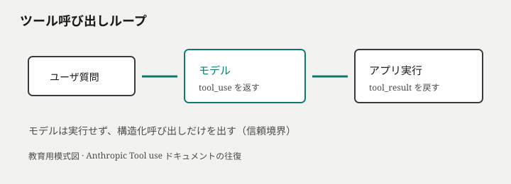
モデルは SQL を実行したわけではない。DB が返した数値を読み、次トークン予測で説明文を組み立てている。ツールが正しくても、最終文が結果を書き換える失敗は起きうる。
Yao らの ReAct（2022）は、推論（Reason）と行動（Act）と観察（Observe）を交互に刻むプロンプト／学習パターンである——思考トークンとツール呼び出しを同じループに載せる設計思想に近い（*3）。MCP（Model Context Protocol） などの配線規約は、ツールとデータソースを異なるホストからモデルに接続するための標準化であり、接続そのものは 検証（verification） ではない。
Agent と検証境界
Agent と呼ばれる構成は、モデルが方策（次に何を生成するか）を出し、オーケストレータがツール実行・状態更新・停止条件を管理するループである。能力の一部はモデルの条件付き分布にあり、タイムアウト・再試行・権限チェック・監査ログは外部システムにある。
三つの境界を混同しない。真正性（出典と prose の一致、ツール結果と説明の一致）、権限（誰が何を実行できるか）、完了（タスクが終わったか、副作用が意図どおりか）は、モデル単体では保証されない——保証はアプリ層と人間手続きに残る。製品が「エージェント対応」と謳っても、検証なしに委任できる領域が広がるわけではない。
長いタスクでは「計画→実行→観察→再計画」が数十往復し、各ステップが文脈窓を消費する。外部メモリ——ベクトル DB、セッション要約——は有限窓を補う製品層の装置だが、要約自体も次トークン予測であり、原文の完全保存ではない。
表現の拡張：マルチモーダル（短く）
画像・音声を同じチャットに載せる マルチモーダル 化は、独立の「次の歴史」ではない。表現層 ——Encoder で視覚特徴を列に写し、既存のデコーダが条件付き生成する——の拡張である。Early Fusion、Late Fusion、統一トークン化など経路は異なるが、下流の保証構造は自動では書き換わらない。幻覚・グラウンディング・検証は、テキストのみの契約の延長として残る。
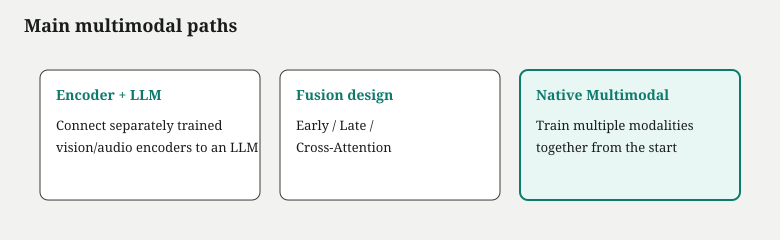
置換と併用の枝——Mamba・Hybrid・拡散LM
| 項目 | 内容 |
|---|---|
| 対象レイヤー | 置換／併用の枝（モデル構造の挑戦） |
| Tree ①の動機枝 | 骨格を疑う／置き換える——高速化枝（同じ Attention を速くする）とは別 |
| 改善対象 | 全対全 Attention の二次コスト、KV メモリ、自己回帰の逐次性・誤り伝播 |
| 変えなかった骨格（主流） | 2024–2026 の商用・オープンウェイト中心は依然 Decoder-only Transformer + 自己回帰 |
| 新しいコスト | 長系列での in-context 再現性、反復 denoise のレイテンシ、エコシステム未成熟 |
| 現在の位置づけ | 研究枝／併用（主流を置き換えたとは言い切れない並行提案） |
第3部のほとんどは、同じ Transformer 骨格のまま ある層を改善する話だった。本章だけ枝が違う。置換／併用の枝 ——Attention や自己回帰そのものを疑い、別の系列変換や生成枠組みを提案する研究である。地図上、これらは歴史の「次の駅」ではなく、主流から 並行して伸びる分岐 である。
State Space Model と Mamba
State Space Model（状態空間モデル, SSM） は、連続時間の動力学を離散化し、隠れ状態の更新で系列を処理する枠組みである。RNN に似た逐次更新を持ちながら、特定の構造下では畳み込みと等価な並列計算が可能になる。Gu & Dao の Mamba（2023）は、選択的状態空間（Selective State Space） により、入力に応じて状態遷移を選び分け、長系列で Transformer の二次計算量を避ける経路を示した（*1）。
Mamba が主張するのは、長距離依存を Attention の全対全参照 なしに扱える可能性である。ただし、大規模スケールでの汎用性、マルチモーダル統合、ツール呼び出しとの相性は、Transformer 主流に比べて実証が浅い領域が残る。第8章の FlashAttention が「同じ Attention を速くする」枝であるのに対し、Mamba は Attention ブロックの置換候補 として読む。
Hybrid アーキテクチャと Jamba
Hybrid（ハイブリッド） 設計は、SSM 層と Transformer 層を交互に積み、両者の長所を取りにいく。Lieber らの Jamba（2024）は、Mamba ブロックと Attention ブロックを組み合わせ、さらに Mixture of Experts（MoE） を載せた大規模モデルである（*2）。帰結は明確だ——「Attention を完全に捨てる」のではなく、どの層で何をするか を再配分する。
Attention は局所的・内容依存的な参照に強い一方、長系列では KV Cache のメモリが支配的になる。SSM は長系列の圧縮伝播に向く一方、細かい in-context 操作の再現性は系ごとに差が出る。Jamba は 層ごとの役割分担の再交渉 であり、次トークン予測という目的関数そのものの変更ではない。
拡散型言語モデルと LLaDA
自己回帰 以外の生成パラダイムとして、画像生成で成功した 拡散モデル（Diffusion Model） を離散トークン列に適用する Diffusion Language Model（拡散型言語モデル） がある。Nie らの LLaDA（2025）は、マスクされたトークンを反復的に denoise し、左から右への厳密な逐次生成に依存しない大規模言語モデルを報告している（*3）。
拡散 LM が問い直すのは、生成の順序と修正可能性 である。自己回帰では一度確定したトークンは条件に固定され、早期の誤りが後続を毒する。拡散型は全体を同時に扱いうるため、局所修正や並列デコードの余地がある——一方、推論時の反復ステップ数とレイテンシは新しいコストになる。

図が示すのは、代替経路が単一の「次世代」に収束しているのではなく、異なる制約 を狙った分岐である。Mamba 系は長系列効率、拡散 LM は生成の非逐次性、ハイブリッドは層ごとの役割分担——いずれも Transformer 全対全 Attention のコストや自己回帰の不可逆性への応答である。
必須性は未確定
観測できる事実は次のとおりに整理できる。
観測された事実: 2024–2026 年の商用・オープンウェイトの中心は、依然として Decoder-only Transformer と自己回帰推論である。スケーリング則、ICL、後学習、RAG、ツールのエコシステムは、この骨格の上に積まれている。
強い推論: SSM・ハイブリッド・拡散 LM は、それぞれ実在するボトルネックに対する技術的応答である。無視できる一過性のブームではない。
未確定な点: Attention、自己回帰、明示的思考トークン（CoT など中間列）が汎用言語知能の必要条件かどうかは、理論的にも実証的にも決着していない。Transformer は今後も中心か、自己回帰は必須か——詳細は第4部の論争アリーナへ。
第4部 現在の論争
知識を並べただけでは、ニュースや論文の主張を評価できない。ここからは勝ち負けを決める場所ではなく、自分の意見を選ぶ材料を置く。各問いは、両者が共有する事実と、割れている測定・価値を分けて示す。
現在議論されていること
Part I–III で技術史・層マップ・各層の最新を並べた。知識のあとに、意見を選ぶ材料を置く。ここは勝ち負けを決める場ではなく、どの事実にどの価値を載せるかを選ぶアリーナである。以下の六枚は、いま割れている問いの型を示す。立場を今すぐ固定する必要はない——第5部で、読者と著者がそれぞれの立場を明示する。
Transformerは終わるのか？
| 区分 | 内容 |
|---|---|
| 論点 | 主流骨格は今後も中心か、Mamba 等へ置き換わりうるか。 |
| 立場 A | 実績・エコシステム・ソフトウェア積層の慣性が大きく、改良は Transformer 内部（FlashAttention、GQA、MoE）と推論基盤で進む。 |
| 立場 B | 長文・KV メモリのボトルネックでは SSM/Hybrid の線形スケールが製品要件を満たしうる——骨格の入れ替えが起こりうる。 |
| 両者が同意しうる事実 | 2026 年時点の商用・オープンウェイトの中心は Transformer 系自己回帰；Mamba/Jamba 等は長系列効率を狙う実在する研究枝である。 |
| 対立している測定・価値 | 中心継続派はフレームワーク・ハード最適化・ツール統合の慣性を重視；置換派はコンテキスト長あたりのメモリ・遅延・スループットを重視。 |
| 自分が判断するための問い | 自分が気にする製品制約——窓長、コスト、レイテンシ——はどちらの指標に近いか。 |
RLVRは新しい能力を生むのか？
| 区分 | 内容 |
|---|---|
| 論点 | 検証可能報酬による強化学習（RLVR）は新能力の獲得か、既存経路の選択確率変更か。 |
| 立場 A | 事前学習では稀な行動様式を RL が安定して引き出し、推論列の長さ・形式を変える——実質的新能力とみなせる。 |
| 立場 B | 改善はもともと分布にあった長い列の再重み付けであり、真偽保証は付かない。 |
| 両者が同意しうる事実 | 検証可能報酬（verifiable reward）は、数学・コード等のタスクで正答率を上げうる。 |
| 対立している測定・価値 | 新能力派は推論ベンチの改善幅と行動様式の安定化を重視；選択派は分布内サンプリング効率と汎化外の失敗を重視。 |
| 自分が判断するための問い | 観測した改善は「できなかったことができるようになった」か、「出る確率が変わっただけ」か——自分のタスクではどちらに見えるか。 |
Agentはモデル性能かシステム性能か
| 区分 | 内容 |
|---|---|
| 論点 | 「エージェントができた」は基盤モデルの進歩か、ワークフロー製品の成熟か。 |
| 立場 A | 長い計画・ツール選択・多段推論は条件付き分布の拡張であり、モデル能力の一部とみなすべき。 |
| 立場 B | 信頼できる完了はオーケストレーション・ツール・検証・権限設計の産物であり、モデル単体スコアとは別軸。 |
| 両者が同意しうる事実 | ツール実行・停止・権限はアプリケーション側で行われる；モデル出力は宣言と prose の生成に留まる。 |
| 対立している測定・価値 | モデル派はベンチ上のツール使用・計画タスクの得点を重視；システム派は本番の成功率・監査可能性・副作用の有無を重視。 |
| 自分が判断するための問い | 自分が評価したいのは「賢い提案」か「壊れにくい完了」か——失敗時にどちらの層を直すか。 |
長文脈はRAGを置き換えるのか？
| 区分 | 内容 |
|---|---|
| 論点 | コンテキスト窓の拡大は RAG（検索拡張生成）を不要にするか。 |
| 立場 A | 百万トークン級の窓が実用化すれば、全文投入で十分な場面が増える——検索は補助に降格しうる。 |
| 立場 B | 検索・キュレーションは依然必須；Lost in the Middle 等の位置効果、コスト、鮮度管理は窓拡大だけでは解けない。 |
| 両者が同意しうる事実 | 窓は拡大傾向にあるが有限；長列でも中間部の参照精度は一様ではない。 |
| 対立している測定・価値 | 長文脈派は「窓に入れば参照できる」利便性と実装単純化を重視；RAG 派は relevant 断片の精度・更新容易性・コスト対効果を重視。 |
| 自分が判断するための問い | 自分の資料は「全部読ませたい」か「正しい断片だけ渡したい」か——鮮度と出典の要否はどうか。 |
MoEはDenseより優れているのか？
| 区分 | 内容 |
|---|---|
| 論点 | Mixture of Experts（MoE、専門家混合）は Dense モデルに対し普遍的に優位か。 |
| 立場 A | 同じ活性 FLOPs でより大きな総パラメータを載せられ、効率フロンティアを押し上げる。 |
| 立場 B | ルーティング不安定・通信オーバーヘッド・品質のばらつきがあり、タスクと規模ごとに Dense が勝つ場面が残る。 |
| 両者が同意しうる事実 | MoE は疎活性化により推論コストを抑えつつ容量を増やす設計である；ルータとエキスパート配置は学習・運用の難所になる。 |
| 対立している測定・価値 | MoE 派はトークンあたりコストとスケール効率を重視；Dense 派は再現性・単純なデプロイ・小規模域での品質を重視。 |
| 自分が判断するための問い | 自分の制約は「同じ GPU で大きい脳」か「予測可能な品質と運用」か。 |
ベンチマーク性能を実社会の能力とみなせるか
| 区分 | 内容 |
|---|---|
| 論点 | リーダーボードの得点は、実務での信頼にどこまで換算できるか。 |
| 立場 A | ベンチは能力の代理指標として有用；順位差は実利用での優劣の手がかりになりうる。 |
| 立場 B | タスク分布・利害・法制度との乖離が大きく、高得点は過信の材料になりうる。 |
| 両者が同意しうる事実 | ベンチ改善は測定された分布での統計的優位を示す；個別事例の真偽・副作用は別命題である。 |
| 対立している測定・価値 | ベンチ重視派は再現可能な比較と開発速度を重視；懐疑派は分布外失敗・ゲーミング・実害リスクを重視。 |
| 自分が判断するための問い | 自分の利用場面はベンチに近いか——失敗したとき誰が何を失うか。 |
六枚を読んだあと、ここで立場を確定する必要はない。事実・推論・意見の棚分けと、著者の一つの見方——検索＋翻訳を軸にした利用設計——は 第5部 で扱う。読者はそこで自分の立場を選び直せる。
第5部 自分はどう考えるか
歴史と地図と論争を手にしたうえで、信頼と利用をどこに置くかを決める。著者の圧縮モデルも、ここで初めて一つの立場として提示する。採用しても、修正しても、拒否してもよい。
自分はどう考えるか
入口の問いは、五部を通ったいま、こう言い換えられる。第1部で骨格交代の歴史を辿り、第2部で六層の地図を手にし、第3部で層内改善と置換枝を分け、第4部でいま割れている論点を見た。獲得したのは、条件付き生成という直接目的、Transformer 系の主流骨格、そして「新しい名前＝次の駅」ではない読み方である。未解決のまま残っているのは、真偽の保証、Agent の責任分界、骨格の必須性、そして測定と価値の対応である。
ここは機構の続きではない。読者が自分の LLM 観を置く場所 である。第4部の論争で選んだ立場を、事実・推論・立場の棚に載せ直す。
観測された事実
検証可能な記述だけを置く。
- 学習の直接目的は、多くの系で 条件付き次トークン予測 —— 与えられた接頭辞のあとに来る離散トークンの尤度最大化——である。[^32]
- Transformer は Self-Attention により学習時の位置方向並列化を可能にし、因果マスク 付きデコーダでは生成時に左から右への逐次確定が残る。[^33]
- 大規模事前学習と有限 Context Window（文脈窓） により、重み更新なしでプロンプトだけタスクを切り替える In-context Learning（文脈内学習） が観測される。[^34]
- Post-training（後学習） —— SFT、RLHF、DPO 等——は口調・指示追従・拒否境界を大きく変えるが、事実の自動保証ではない。[^35]
- RAG（検索拡張生成）、Tool use（ツール呼び出し）、エージェントのオーケストレーションは、モデル外側のアプリケーション契約である。実行と検証はアプリ層に残る。[^36]
- マルチモーダル化は表現層の拡張であり、幻覚・グラウンディング・検証の問題を自動では消さない。
- 2026 年時点の主流は Transformer 系自己回帰だが、SSM/Hybrid、拡散 LM などの代替経路が並存している。
強い推論
事実から妥当な距離までの推論。反証可能性を意識して置く。
- 流暢な prose は、訓練分布に似た続きを高尤度にする結果であり、世界状態の正しさの証明ではない。Bender らの警告は、能力の有無ではなく 保証の所在 についての規範的含意を持つ。[^37]
- スケーリングは平均損失を改善しうるが、個別プロンプトの真偽や、窓外情報の扱いを自動解決しない。[^38]
- Test-time compute（推論時計算）と Chain-of-Thought は、探索パスと正答率を変えうるが、中間列も次トークン予測の産物であり、照合義務を代替しない。
- ベンチマークの高得点は、測定されたタスク分布での統計的優位を示す。実社会のタスク分布・利害・法制度との一致は別命題である。
哲学的・実務的立場
証明も観測もせず、利用の設計に効く見方。読者は受け入れ・修正・拒否できる。
ここで初めて、著者の 利用上の圧縮モデル を提示する。これは技術の正式分解ではない。壊れにくい委任判断のための、一つの見方である。
大規模言語モデル単体を、「膨大なパターンの検索」と「条件に合わせた翻訳」に近い装置として扱う。 重みは過去コーパスの統計を圧縮し、プロンプトはクエリであり、出力は「らしい続き」への写像である。これだけでは冷たい。だから実務では、同じ見方に 文脈窓（いま条件に入っている接頭辞の有限性）、外側のワークフロー（検索・ツール・人間の検証・権限設計）、推論時計算（難問に時間予算を足す）を一体のスタンスとして載せる。四つは別レイヤーの正式名称ではなく、信頼をどこで設計するか を指す道具である。
この立場を採ると、チャットは「賢い相手」ではなく、条件付き生成器＋あなたが足した境界 として扱える。採らなくてもよい。代替として、「理解を獲得した内部表現」を重視する見方や、ベンチマーク至上主義もある。重要なのは、入口でどれか一つを押し付けないことではなく、終盤で明示し、選べるようにすること である。
二つの木の回収（第2部）
第2部で分けた二つの木を、ここで一枚に重ねる。上半分は時間（技術史）、下半分は構成（システム）——辺の意味が違う。

判断の既定座標は、まず どちらの木か、次に Tree ②の六層——学習方法／モデル構造／推論方法／推論高速化／外部システム／UI・制度——である。
層を混ぜると判断が濁る。「モデルが悪い」のか「Retriever が誤った」のか「デコードが揺れた」のか——介入が違う。MoE はモデル構造（かつ系譜では巨大化の枝）、FlashAttention は推論高速化、RAG と Agent は外部システム、と名指せれば、「だから何？」に答えられる。
モデル単体では保証されないもの
「できない」と言い切ると、能力の有無まで否定してしまう。ここでは 単体では保証されない と線を引く。
| 領域 | 単体では保証されない理由（層） |
|---|---|
| 事実の正しさ | 事前学習・次トークン予測：尤度と真理の乖離 |
| 最新情報 | 事前学習のカットオフ；窓外は存在しない |
| 長文の一貫した遵守 | 文脈窓・位置効果；要約による書き換え |
| 計算・照会の正確性 | ツール未使用時は prose による模倣 |
| 権限・副作用のない行為 | アプリ層の実行と承認なし |
| 再現性のある出力 | 推論層の Sampling |
| 画像・音声の接地 | 表現層の拡張は参照の証明ではない |
保証が要るときは、層を上げる——検索、ツール、テスト、人間——のではなく、設計として外側に渡す。
判断規則
新しい主張や製品宣伝に直面したとき、次の順で問う。
- どちらの木か — Tree ①（技術史・系譜）か Tree ②（システム構成）か。Agent を Tree ①の子に置かない。
- 歴史か動機枝か — 骨格交代か、巨大化／高速化などの動機枝か、置換枝か。
- 層を名指す — 学習方法／モデル構造／推論方法／推論高速化／外部システム／UI・制度。
- 棚を分ける — 観測事実か、強い推論か、立場か。混ぜない。
- 「単体では保証されない」で線を引く — 能力否定と保証否定を混同しない。
- 著者の検索＋翻訳は一つの立場 — 技術の正式分解として再エクスポートしない。
- 論争 ID に落とす — 第4部のどの問いに近いかを一言で言えるか。
症状から層への短い対応表。
| 症状 | まず疑う層 |
|---|---|
| 言い回しだけ変わる再生成 | 推論（Sampling） |
| 長い貼り付け後にルール消失 | 文脈窓・製品側要約 |
| 存在しない引用・数値 | 事前学習＋幻覚；外側検証未実施 |
| 「検索した」表示でも誤り | アプリケーション（RAG）と prose の合成 |
| ツール結果と本文の不一致 | アプリケーション（Tool use） |
| 「考え中」でも誤答 | 推論（test-time compute）；照合は別 |
| 画像を見ていない説明 | 表現（マルチモーダル）＋幻覚 |
life placement
いま話題になっている主張——新モデル、規制論、仕事への影響、安全宣伝——について、次を声に出してみる。
どの歴史的ホップの話か。どの層の話か。それは事実・強い推論・意見のどれか。
例: 「100 万トークンの窓で全部覚える」——層は文脈窓と製品実装（事実は有限；完全記憶は推論・立場の混線になりやすい）。「推論特化で人間超え」——ホップは Decoding·TTC（事実はベンチ改善；実社会能力は推論・立場）。「マルチモーダルで幻覚が消えた」——ホップはマルチモーダル（事実と反する；保証は表現層では増えない）。
層を名指せないとき、流暢な文章に主体性を預けている状態に近い。名指せたとき、介入——窓の設計、検索、拒否、人間へのエスカレーション——を選べる。
論争カード
論争: ベンチマーク性能を実社会の能力とみなせるか
| 立場 | 内容 |
|---|---|
| みなせる（限定的） | ベンチは能力の下限指標になりうる。同分布のタスクでは順位相関がある |
| みなせない（デフォルト推奨） | 分布シフト、利害、連携タスク、責任の所在はベンチ外。高得点は 強い推論 までで、利用契約の根拠にはならない |
先導問いへの回収
入口の問いに戻る。
どの問題を解決しながら現在の形になったか。 疎な数え上げ、長期依存、固定長ボトルネック、逐次学習、意図とのずれ、計算コスト、一発生成の限界、知識の固定化、テキスト以外の入力、骨格の効率——それぞれに技術的応答が付いた。
何を獲得したか。 強力な条件付きテキスト生成、スケールと後学習による製品体験、推論基盤と外界接続の道具立て、マルチモーダル条件付け、代替経路の探索。
何が未解決か。 真理と流暢さの分離、保証の設計、ベンチと現実の溝、Attention・自己回帰・思考トークンの必然性、そして あなたがどの層に信頼を置くか。
観測された連鎖の上で、保証は層ごとに設計し、解釈は読者が選び直せる——それが、この記事の出口である。